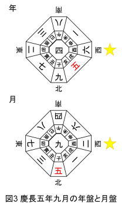
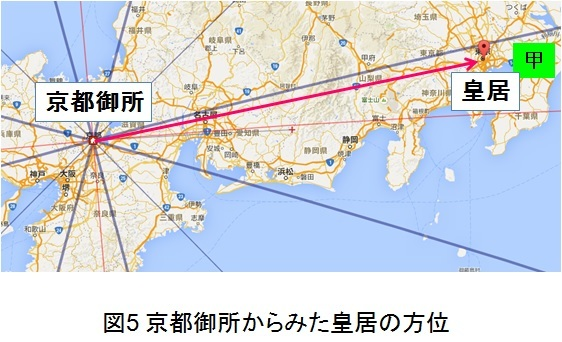

| 『想い』を遂げる経営者の方位哲学 ビジネス気学シリーズ | |
| 佐々木 滉彰 | |
| A team of Business-Kigaku (2017) | |
『想い』を遂げる経営者の方位哲学
本作品の全部または一部を無断で複製、転載、配信、送信したり、ホームページ上に転載したりすることを禁止する。また、本作品の内容を無断で改変、改ざん等を行うことも禁止する。
本作品購入時に承諾いただいた規約により、有償・無償にかかわらず本作品を第三者に譲渡することはできない。
本作品を電子書籍化するにあたり、一部の漢字が簡略体で表示される場合がある。また、表示する機種により、表示の差が認められる場合がある。
ビジネス気学シリーズについて
二〇一四年二月、名古屋に山口知宏 先生をお招きして初めての気学セミナー「展望と開運」を主催した。その翌月から「ビジネス気学 勉強会」をスタートし、毎月続けてきて四年半である。この「ビジネス気学」という言葉は、世の中の全てのことに活用できる気学を、恋愛や家庭問題などのプライベートではなく、ビジネスシーンへの応用に特化して活用方法を学ぶという意味で名付けた。他の気学講座と基本的なことは全く同じで、唯一、ビジネスに活かすことにフォーカスしているということが違いである。
そんなビジネスシーンのための気学勉強会のため、参加者の多くは経営者や事業主である。最近はおかげさまで、毎回参加してくれるメンバーが随分と増えてきた。そして新しいメンバーが参加するたびに、同じペースで勉強できるようにと、私自身が入門講座を行うようになった。その中で、参加メンバーに応じて内容を少しずつ変えていったことで、数パターンの入門講座ができあがった。
本シリーズは、そんな一度の入門講座では伝えきれなくなった内容をまとめ、一人でも多くのビジネスパーソンが気学の基礎を理解しビジネスに活用できるようになることを目的としている。
はじめに
二〇一六年四月にシリーズ第一巻「博士の愛する気学 」を、二〇一六年一〇月に第二巻「ビジネスのための気学基礎 」を出版した。第一巻を出版した当初はどれくらいの方の目にとまるか全く想像がつかず、知人が温情で購入する以外は、ほとんど売れないという事態も想定していた。しかし、一巻、二巻とも予想を超える多くの方々に読んでいただき大変嬉しく感じている。この場をお借りして謝意を述べたい。また、第二巻の「ビジネスのための気学基礎」はコンスタントに読まれており、多くの方が気学のビジネス応用に高い関心を持っていることをうかがわせる。
本シリーズは、「ビジネス気学 勉強会」に参加する初学者向けの入門講座を、電子書籍三冊にまとめる予定で書き始めた。そして、その三冊目(本書)をやっと出版することができた。第一巻の執筆から二年近く経つのだが、その間ずっと「伝えなければ」や「書かなければ」という、ある種のつっかえ が心の中にあった。しかし、ここに無事に上梓でき、ホッと胸をなでおろしている次第である。
第一巻は、入門講座の冒頭部分にあたる筆者の経験談が中心であり、気学をビジネスで活用するための導入部分であった。第二巻は、入門講座の基礎部分であり、一般的な基礎知識をビジネスで活用するために、押さえておきたい捉え方や考え方・ノウハウを紹介した。更には、学問としてのルーツや心構え、人的成長、人材育成などについても紹介した。
本書では、入門講座で最も伝えたい部分である気学の「方位哲学」としての活用を紹介する。事例として、徳川家康、明治天皇、豊田英二(トヨタ自動車工業(株)五代目社長)、松下幸之助と、誰もが一度は耳にしたことがあるであろう時代ごとのリーダーが、どのように盤面を活用したのかを読み解いていく。また、年盤、月盤、日盤の活用方法も紹介しているので、今後、読者諸氏が気学をビジネスに活用する際の一助となれば幸いである。
それから、前作の冒頭でも記したが、本書(本シリーズ)で述べていることは飽くまでも「入門」のため、基本内容のごく一部の紹介に過ぎない。数千年という悠久の時を重ね纏 められた叡智 が、このたった数十ページで伝え切れるはずがないことは、賢明な読者諸氏はお分かりだと思う。しかし、中には「気学のことはだいたい分かった！」と妙な勘違いをする人もいると思うから、念のために断っておく。本書(本シリーズ)は、
《気学をビジネスに活用するための入口》
である。
気学を十分に実践するためには、方位哲学の学びだけでなく、家相哲学の学びも求められる。つまり、方位だけでは不十分であり、本書で紹介する事例は、気学の一側面であることを念頭に読み進められたい。しかし、その一側面においても、そこには、盤面を活用した者の想いが表れており、大変に興味深いものである。僭越ながら本書を通して、方位や盤面の本来の 活用に興味を持ったならば、是非とも更に学びを深めていってほしいし、可能であればビジネス気学勉強会にて一緒に学びたい。
本書を通して、時代ごとのリーダー達が学び、受け継いできた東洋の叡智の集大成に触れ、一人でも多くの人に「実践の哲学としての気学」を伝えることができれば幸甚である。
この本を執筆するにあたり、山口先生をはじめ応援をくださった勉強会メンバーの皆さん、修正や構成などのチェックを快く引き受けてくださった佐藤さん、電子書籍化に関して終始、懇切丁寧にご指導くださった電子出版社ハッカドロップス の中根さん、そして、これまで出会った全ての方々に感謝を伝えたい。皆さんとの一つひとつの出会いがなければ、今の私はないのだから。
出会ってくれて本当に心からありがとう。
二〇一七年十月
佐々木滉彰
目次
ビジネス気学シリーズについて
はじめに
明治時代に気学開祖・園田真次郎がそれまでの九星術や方位術、家相鑑定術などを体系的にまとめ「気学」と総称した。その際に、園田は方位術 とは言わずに方位哲学 と称している。なぜ「術」とせず「哲学」であるのかは、その著書「改正方位明鑑」の次の文から読み取ることができる。
―――
天地自然に行う道と作用とを研究し、利用して人類の福祉を増進するのが、家相哲学であり、方位哲学の使命である。
―――
何を表しているかというと、前半の「天地自然に行う道と作用とを研究し」の部分が盤面の作用とその活用を研究するという意味である。そして、次の「利用して人類の福祉を増進する」が、その作用を活用して、地域や社会に貢献するということである。平たく言うと、吉方・凶方・吉相・凶相などの作用を研究し、「人の役に立つこと」が気学の使命だと言っているのである。したがって、「吉方だから行く」とか、「凶方だから行くのをやめる」という吉凶だけ で決めたり、「相性が良いから組む」とか「相剋の関係だから避ける」という相性・相剋だけ で選択したりすることは、表面的なことに囚 われており、気学の使命から外れることになる。大切なことは吉凶それぞれのシーンにおいて、どのように振舞えば、人の役に立てるのかを考え、行動することである。
本書では、単なるテクニック論ではなく、自然法則に基づき、人としての道理を説いている「本来の気学」を、時代ごとのリーダーがどのように活用したのかを方位哲学の面から検証する。さらには、年盤、月盤、日盤のビジネス応用について紹介する。
・方位術
現在、気学で「方位」といえば、引っ越しや旅行の方位を思い浮かべる人が多いのではないだろうか。「引っ越しをするので、吉方かどうか鑑定してください。」「家族旅行に行くので、吉方を教えてください。」などは典型的な例で、最 も一般的な質問であろう。引っ越し先が吉方となる日を狙って引っ越したり、休日に吉方となる場所を狙って旅行に行ったりすること自体は、私も勧めるところである。では、吉方へ行ったら、誰もが「幸せになれるのか？」「良いことが起こるのか？」。方位術 として気学を使っている人からすれば、その答えは一様に「イエス」であろう。特に「吉方引っ越し」は多くの流派が推奨しており、実際に効果を実感している人も多いことだろう。しかし、「吉方引っ越し」をしても現状維持か引っ越し前よりも状態が悪くなる人もいることは事実であり、ここに方位術 としての限界がある。以下に方位術について具体的に述べる。
一言に「方位術」といってもいくつかの知識が含まれる。方位の吉凶をみるのは移動する本人の星(本命星・月命星)と、遁甲盤でその方位に廻 座 している星(一白水星、二黒土星などといった九星)との関係である。本人と廻座している星が相性の関係であれば、その方位は「吉方」である。一方、「凶方」となるのは、後述の五大凶方となる星が廻座した場合である。この吉方を定める相性の関係と、五大凶方は陰陽五行論に由来する。また、方位は八方位に分けられており、これは易 に由来する。そして、九星は九宮貴神に由来する。これらの知識を総合して、方位の吉凶が定まる。そのため、何が吉で何が凶なのかという具体的なことは、陰陽五行論や易などを正しく理解しておく必要がある。しかし、この陰陽五行論や易、ましてや九宮貴神のことなどほとんど知らなくても、方位の吉凶のみ であれば、誕生日と星の廻座から簡単に導き出すことができる。そのため、気学の入門書や初心者向け講座のほとんどは、「本命星一覧表と月命星一覧表の読み方」「遁甲盤の読み方」「吉方・凶方の見つけ方」が中心となっている。もちろん一覧表から正しく 星を導き出し、遁甲盤から正しく 星の廻座や吉方・凶方を導き出すことは基本中の基本で、欠かすことのできない重要な技術である。星や方位を間違えてしまっては、吉のつもりが凶だったり、吉方でも凶方でもなかったりして、期待したこととは全く違う結果となる。
今ここに列挙した陰陽五行論や易は、古代中国で興 った帝王学の元であり、孔子や孟子に代表される儒学の思想的根幹でもある(詳細は第二巻を参照)。そのため、気学を正しく活用し、最大限の効果を得るためには、陰陽五行論や易の思想的部分や考え方を深く理解することが重要である。
ここで、気学を身に付ける順序であるが、最初のステップは、一覧表から本命星・月命星を導くことや、遁甲盤から吉方・凶方を見極めることである。そして、これらができるようになってから、次のステップの「今、その方位に行くということは......」と、方位の意味の読み解きに進むのである。最初の星や吉凶を出すところまでが「術」の部分である。一般的にはこの術の部分があたかも気学の主要部分のようになっており、「凶方だから、それを避けるためには......。」とか、「吉方で行くためには○月△日から×日の間に......。」のように「避ける」「合わせる」の二元論となっている。確かに、凶方を避けることに越したことはないし、合わせられるなら吉方でその方位へ移動したい。しかし、本来の目的を変えてまで凶方を避けたり、相手に迷惑をかけてまで吉方となる日程を選んだりすることは、本末転倒であり、方位術 に頼る弊害である。
・方位哲学
気学の元である陰陽五行論や易は帝王学であるから、気学も帝王学である。つまり、「国を治めるため、民の安寧 のため、リーダーとしてどのようにあるべきか。」が、最も大切となる。それは良い時も悪い時も、望む時も望まない時も、どんな時でも民の規範となる姿勢、態度を示さなければならない。リーダーといえども人の子であり、「あそこには行きたくないな。」とか「あの人とは会いたくないな。」など避けたいことが多少なりともあるはずだ。そのような時に、仮に心の内でこのような感情を抱いたとしても、その個人的感情を出すことなく、行くべきところへ出向き、会うべき人と向かい合うことがリーダーには求められる。
例えば、商談の場所が凶方であるとき、それを避けようと場所や日程を変更してもらったり、その前に他の場所へ行き直接の凶方とならないように方位替えをしたりする。この避けようとすることや方位替えをしようとすること自体は悪いことではないし、私もよく使うテクニックである。これは「方位術」としての気学である。その一方で、「方位哲学」としては、「なぜ、その凶方に引っ張られたのか。」「心のどこかに慢心があるのだろうか。」「先方に対して予想外の話で、迷惑をかけてしまう(しまった)のだろうか。」という原因にも目を向けることが大切である。
別の例えとして、店舗移転を考える。「吉方へ移転させたい。」と思い、候補となっている場所がちょうど吉方となるタイミングで移転させるケースと、吉方であるエリアの中から移転先を決めるケースとがある。どちらのケースにおいても「吉方移転」であることには変わりなく、そのこと自体は大いに歓迎すべきことであるし、「方位術」としての活用であれば、これで十分である。しかし、この移転が、従業員にとっては交通の便が悪くなるとか、繁忙期の移転のため余計な仕事が増えて疲弊してしまうなどの事態となってしまう場合、この移転では、その吉方の効果を受け取れないだろう。帝王学＝リーダー哲学であり、為政者にとっては国民の、経営者にとっては従業員の幸福が何よりも大切である。その一番大切な従業員にとって不便になることや、過重労働となるような移転を、「吉方だから」という理由のみ で行うことは、帝王学の本道に反する行いである。このような移転は、独りよがりの考え方、身勝手な考え方の最たるもので、リーダーとしての資質を欠いていると言わざるを得ない。加えて、このようなことをしていては従業員の心が離れていくため、結果として、予定通りに移転できなかったり、できたとしても短期間でその場を退去せざるを得ない状況に陥ったりすることになる。一方で、この移転が、従業員の幸福と会社の真の繁栄を心から願って理解を得た上で決めたことであれば、同じように交通の便が悪くなろうとも、繁忙期と重なり重労働となろうとも、従業員がついてきてくれるため、その吉方の効果を享受することができる。そのような状態を作り出せるかどうかは、日頃からの従業員との関係をどれだけ大切にしているかで決まるのであり、その時だけ耳あたりの良い言葉を並べることとは違う。
このように、方位術としての活用は、吉方となるのは「いつ」なのか、「どこ」なのかといった、タイミングと場所を知り、その通りになるように行動することである。そのため方位替えや、日時の変更などに代表される、「スケジュール変更」が必要になることがある。何度も言うが、このこと自体は私も実践していることであり、必要に応じて取り組むことは大切である。一方で、方位哲学としては、吉方に引っ張られているのか、凶方に引っ張られているのかという運気の流れを読み解くところが大切になってくる。そして、凶方へ引っ張られている場合には、意識して、これまでの自分を省みる契機とすることである。周囲の大切な人達と永続的に繁栄していくことが帝王学としての目指すところであり、盲目的に吉方へ行ったり、凶方を避けたりしているだけでは、いつまで経っても人間的成長がないため、結局は凶方へ引っ張られてしまう。自らを省みて、心も言動も成長していくことで、自然と吉方との縁が増えていく。
本書は、気学をビジネスに活用し、帝王学の実践を目指すための入門書であるから、この「術」と「哲学」の違いを理解した上で、読み進めたい。
吉方の分け方にはいくつかあるが代表的なのが、一白吉方、二黒吉方、・・・九紫吉方のように、九星を元に分ける方法と、生気 吉方、毗和 吉方、退気 吉方の三種類に分ける方法である。その他、傾斜や同会といった個人の星に因 んだ吉方や、九星の組合せから更に深く読み解く方法などがある。これらの効果を全て理解するためには、九星それぞれの象意 を理解していることや傾斜や同会の鑑法 、易などを正しく理解していなければならない。全て理解することは、「入門」の枠を超えるため、その細かい内容に関しては、本書では扱わない。気になる方は、私も受講生である毎月の勉強会に参加し、一緒に学ばれると良いだろう。
以下に、一白吉方から九紫吉方の象意の一部を解説し、星の重なりから生じる吉方の一例を紹介する。また、恵方の効果と、生気 吉方、毗和 吉方、退気 吉方についても記した。ただし、恵方と生気吉方、毗和吉方、退気吉方については、第二巻で詳述しているので、既に読んでいる場合は、読み飛ばして差し支えない。
・一白吉方
北(真北を基準とした北30 度の範囲、坎 宮 )または一白水星が廻座している方位が吉方となるときに、その土地の気を取り入れることを「一白吉方をとる」という。これは、一白水星の象意に関する事象がおき、それを乗り越えることで人生がより豊かになる方位である。一白水星の象意の一例として「人間関係」や「貧」がある。「人間関係」とは、読んで字のごとく様々な人たちとの関わりのことであり、信頼関係のことである。仕事においては、上司や部下など社内の関係だけでなく、取引先なども含めて、些細なことにおいても情報を共有し、率直に意見交換をし、連絡を密に取ることがポイントである。時には意見の相違から衝突することもあるだろうが、乗り越える度に信頼関係が深まり、その後の大きな成果へとつながる。また、「貧」とは経済的困窮のことであり、凶方の場合は思わぬ出費や減俸などでどんどんと貧窮していく。吉方の場合は、同じように一時的に貧することはあるが、それは設備投資や人脈構築のための先行投資、あるいは何かに困っていたり、苦しんでいたりする人に対する貢献など、将来的に返ってくるキャッシュアウトであり、一時的 なものである。その時に「お金がない」と言ってチャンスを逃すのか、苦しい中、何とか工面してチャンスをものにするのかは本人の選択である。そのチャンスを逃していては、一白吉方の効果を活かすことはできない。つまり「人間関係」の象意においては、一緒に仕事をする中で苦労を共にし、相互理解を深め、人間力を養う。「貧」の象意においてはお金の苦労を通して、他人の痛みを知り、乗り越える力を蓄える。これらが一白吉方の効果の一例で、どのような困苦でも乗り越えられる力が備わり、より豊かな人生になっていく。
・二黒吉方
南西(真北を基準とした南西60 度の範囲、坤 宮 )または二黒土星が廻座している方位が吉方となるときに、その土地の気を取り入れることを「二黒吉方をとる」という。二黒土星の象意に関する事象がおき、それを乗り越えることで人生がより豊かになる方位である。二黒土星の象意の一例として「大地」や「基盤力」がある。植物でいえば地中に根を張ることであり、家の建築でいえば、基礎を築くことである。どちらも目に見えない部分である。しっかりとした根を張るのか、貧弱な根となってしまうのかで、その後の成長度合が全く異なることは、誰もが理解しているところである。また、頑強な基礎を築くのか、手抜き工事などによって不安定な基礎となるのかで、家の寿命や災害時の被害が大きく異なることは言わずもがなである。この目には見えないが人生の基本となる重要な部分をしっかりと築く機会に恵まれるのが二黒吉方である。仕事においては「それ、私に頼まなくても良いよね？」と言いたくなるような雑用かもしれない。または、みんなが断るような面倒臭く、手間暇もかかり、その上、そんなに重要でない単なる雑務かもしれない。そんな時に、「えー。」と嫌な顔をしながら取り組んだり、後から愚痴ったりするのか、どんなことでも責任を持って引き受けるのかで評価が分かれ、後に任せられる仕事や収入が大きく変わってくる。「人生の基盤を築き上げる。」と言うと聞こえは良いが、ほとんど評価されることのない下積みである。そして、このように他の人には見えないところで与えられた役割に対して、真摯に取り組むことができるかどうかが大きなポイントとなる。役割をしっかりと果たし、相手の期待に応えながら成長し、信頼を築いていくことで、技術や経験を積むだけでなく人間として成長し、様々な素養が身につき、大切な人達との縁が結ばれる。これが二黒吉方の効果の一つで、地に足をつけ、安定した人生となる礎 を築くことになる。凶方でとった場合は、この反対で、人生の基盤が崩れていくので、寂しく苦しい晩年を送ることになる。
・三碧吉方
東(真北を基準とした東30 度の範囲、震 宮 )または三碧木星が廻座している方位が吉方となるときに、その土地の気を取り入れることを「三碧吉方をとる」という。三碧木星の象意に関する事象がおき、それを乗り越えることで人生がより豊かになる方位である。三碧木星の象意の一例として「朝日」や「出世」がある。どちらも明るいところに出るという意味であったり、人生に一筋の光明が差すという意味であったりする。人生の目的や目標がハッキリしていなかった人や、迷いがあった人にとっては、道筋が明確になる。既に歩み始めている人にとっては、見落としていた新たな道や、分かれ道が現れる。ここで気をつけなければならないことは、「明確になること」と「その道で成功すること」とは別であるということである。新たに明確になったその道を歩み始める ことは、それまで地中に根を張り、やっと世に出た若葉と同じである。まだまだ貧弱である。二黒吉方と異なり、周囲から頻繁に声がかかるようになる。それが、売上や利益に繋がらなくても、こちらの期待したものと違っても、若葉らしく元気よく応対できるかどうか。これが大切なポイントである。脇目も振らず一心に取り組む中で、その道のプロとして周囲に認知されるようになる。しかし、どんなに一生懸命取り組んでも、象意としては「駆け出し(=若葉)」というところから、熟練工やベテランに比べて未熟である。そのため「私なんか、まだまだです。」と謙虚さが肝心であり、決して忘れてはならない。このような状況の中で、あちこちに気を散らしたり、謙虚さを欠いたりすれば、吉方を活かすことはできない。一つの目標に向かい、若々しく精力的に取り組むことが三碧吉方の効果的活用であり、変化に富んだ楽しい人生となっていく。
・四緑吉方
南東(真北を基準として南東60 度の範囲、巽 宮 )または四緑木星が廻座している方位が吉方になるときに、その土地の気を取り入れることを「四緑吉方をとる」という。四緑木星の象意に関する事象がおき、それを乗り越えることで人生がより豊かになる方位である。四緑木星の象意の一例として「発展」や「整う」がある。植物の成長では幹が太くなり、枝や葉がどんどんと生える。つまり、上へ横へと多方面に伸びていく。これが発展である。と同時に、無闇矢鱈 とあちこちに手を伸ばすのではなく、無駄なところや不必要なところを伐採し、大切なところへ注力する。これが「整う」の側面である。仕事においては、予想以上に客が増えたり、様々な案件が舞い込んできたりして忙しくなってくる。場合によっては生産能力以上の注文があり、人員増強や設備投資により一時的に多額のキャッシュアウトが発生したり、借り入れをしたりして、それを凌ぐだけで精一杯になってしまうという事態に陥る可能性もある。そのような機会に、能力以上の注文だからと断るのか、折角の注文だからと受けるのか、もっと言うと、このような事態をも想定して準備してきたかどうか。これまでの取り組みが問われる。「吉方をとったのだから、何か素敵なことが起きて、収入も増えて、ゆっくり、のんびり安定した毎日が送れるかも。」と、期待していたのであれば、この吉は望まぬ吉となろう。人が集まり、仕事が集まり、そこに時間と資金と労力を精一杯投入して、最大の成果となるよう無駄を省き、効率を上げ、期待に応えることが四緑吉方の効果的活用である。これにより、今まででは考えられなかったような飛躍的な発展を遂げる人生となっていく。
・「五黄吉方」という吉方は無い
五黄方位は「五黄殺」という大凶方である。詳しくは後述の五黄殺の項を参照されたい。年盤と月盤において五黄を吉方で用いることはない。しかし、日盤と時刻盤においては、吉方ではないがその効用を活用する場合がある。しかし、その活用方法は、本書が扱っている「入門」の範囲を超えるためここには記さない。読者諸氏が入門・基礎から応用までをしっかりと身に付け、いつの日か、気学で最も大切な「五黄」の意味を十分に理解した上で「五黄」を活用する日が来ることを祈っている。
・六白吉方
北西(真北を基準として北西60 度の範囲、乾 宮 )または六白金星が廻座している方位が吉方となるときに、その土地の気を取り入れることを「六白吉方をとる」という。六白金星の象意に関する事象がおき、それを乗り越えることで人生がより豊かになる方位である。六白金星の象意の一例として「完成」がある。六白吉方をとると、これまでに取り組んできたことを完成させる機会に恵まれる。ということは......、これまでに何も取り組んできていない人や、最近になって取り組み始めたような人は、人の役に立つための「何か」を完成させるための長い道のりが始まる。それは、心、思考、行動など全てにおいて見直すことから始まる人もいる。「おいおい、それって苦労の始まりじゃないか！」と思う人もいるだろう。正 しくそのとおりで、何かを完成させるということは、その過程において相応の苦労を伴う。気学はその苦労を乗り越える力を養う学問であり、その苦労をテクニック的に避ける術 ではない。一方、これまでに取り組んできたことがある人は、それを完成させることにより、人の役に立つことの悦びを得られる。ここで、完成つまり区切りをつけずに、さらに、「もっと、もっと......。」と、欲張ると六白の吉を逃すことになる。完成とは成果のことであり、文字通り「実がなる」ことであるから、これまでの取り組みの結果を収穫しなければならない。負の種を蒔き、育ててきた人は負の成果を収穫しなければならない。どんなに吉方だからと言って、負の成果を正の成果とすることはできない。負の成果を収穫し、向き合い、改め、次に正の種を蒔くステップへと導かれる。このようなことが六白吉方の効果である。どんなことでも最後まで責任を持って成し遂げることで、人の役に立つ悦びを実感し、実り多き人生となっていく。
・七赤吉方
西(真北を基準とした西30 度の範囲、兌 宮 )または七赤金星が廻座している方位が吉方になるときに、その土地の気を取り入れることを「七赤吉方をとる」という。七赤金星の象意に関する事象がおき、それを乗り越えることで人生がより豊かになる方位である。七赤金星の象意の一例として「悦び」や「心のゆとり」がある。この「悦び」は土作りから収穫までみんなで苦労をしてきて、やっと実った成果をみんなで分かち合う悦びである。また「心のゆとり」とは、その道を究 めた大家 がわざと 崩す遊び心のことである。例えば、陶芸の大家 が湯呑の淵を少し歪めたり、焼入れの時に色合いを一般的なものと変えてみたりするが、そういった、完璧なものを作れる上で、そこからわざと 外すことである。勘違いしてはならないのが、完璧にできるようになった人が、それを踏まえた上でするから芸術となるのであって、基礎も実力もない人がやっても、それは単なる独りよがりにすぎず、駄作である。七赤吉方をとると、このように完璧の次の「芸術的仕上げ」をする機会に恵まれる。本書は気学のビジネスへの活用を目指しているのだが、「芸術的」と言われるとピンとこない人もいると思うので、ビジネスに関することで具体的に説明する。この七赤吉方をビジネスにおいて活用する場合、製品や商品でいえば高付加価値の部分である。機能的に他の製品よりも優れているのは当然で、更に「あなたが作ったから」や「御社の商品だから」と、手に入れたいと思わせる何か を生み出すようなチャンスが訪れる。その時に、「いや、もうこれ以上付けるものは無いし......。」とか、「他社製品よりも優れているので......。」と高を括 るのか、「まだまだ、お客さんの心を揺さぶる何かが足りないのでは......。」と、目に見えない部分までこだわっていくのかで、新製品をリリースするたびに喜んで購入してくれるファンを増やすのか、沢山ある類似品と比べて、検討の結果、買ったり買わなかったりされる単なる一商品 として埋没していくのかに分かれる。何が正しいのか分からない中、心を揺さぶる「何か」を生み出すのだから、チームみんなと産みの苦しみや育ての苦しみを共有し、時には衝突し、反目し、様々な壁を乗り越えていく。そうやって世に送り出した結果として、受注数や売上高、利益という数字となり、最後にお客さんから「買って良かった。」や「待ってたよ。次も楽しみ！」のような嬉しい言葉をいただく。この感動をみんなと分かち合い、悦び合えることが、七赤吉方の効果の一つである。飽くまでも、そうなれる機会を得るだけであるから、それに向かって歩を進めるのかは本人次第である。仕事に限らず、あらゆる場面・状況において、相手の心を揺さぶる「何か」を求める中で、他者に対する理解を深め、周囲の人達と悦びを分かち合い、どんなことにも感謝の念が湧いてくる人生となっていく。
・八白吉方
北東(真北を基準として北東60 度の範囲、艮 宮 )または八白土星が廻座している方位が吉方となるときに、その土地の気を取り入れることを「八白吉方をとる」という。八白土星の象意に関する事象がおき、それを乗り越えることで人生がより豊かになる方位である。八白土星の象意の一例として「停止」や「切替」がある。停止や切替と聞いて、負のイメージを持つ人がいるかもしれない。しかし、止まることで見えたり気づいたりすることがある。また、切り替えることで望む結果を得たり、目標を達成したりすることもある。店舗を改装するために、一旦、閉店する。その間の売上は当然ないが、リニューアルオープン後にお客さんが増え、業績が回復するというような事象がこれにあたる。八白吉方をとると、これまでの歩みを振り返り、断つものを断ち、改めるものを改め、守るものを守り、人生の更なる高みに進むための岐路に立つ機会が訪れる。そのため、それまで順調に進んでいたことが停滞する。伸びていた売上、年々増えていた収入、どんどん広がっていった交友関係、融通のきいていたスケジュールなど様々なことが伸び悩んだり、停滞したり、思い通りにいかなくなったりする。これを機にどれだけ内省し、自己を改めることができるかが、八白吉方を活かすポイントとなる。今まで抱えてきたことで、譲れるものや手放せるものがあるはずで、それらを譲渡したり、処分したりして、身軽になること、そして本当に大切なものを手元に残し、これまで以上に大切にする。八白吉方により、このような機会が訪れた時に、何もかも抱えこんだ状態では、その吉を活かすことはできない。世代を超えた永遠の繁栄を目指す気学において、次の世代の幸福や豊かさこそが真に大切なことである。これまでの取り組みや成果を次の世代にバトンタッチすることで、より貢献度の高い人生へと切り替わっていく。
・九紫吉方
南(真北を基準とした南30 度の範囲、離 宮 )または九紫火星が廻座している方位が吉方になるときに、その土地の気を取り入れることを「九紫吉方をとる」という。九紫火星の象意に関する事象がおき、それを乗り越えることで人生がより豊かになる方位である。九紫火星の象意の一例として「離」や「極」がある。「離」には読んで字のごとく離れるという意味がある。が、実は「くっつく」という意味もある。また、「極」は北極や南極、極数など、物事の極みや頂き、頂点という意味がある。九紫を吉方でとった場合には、不必要なものは離れていき、大切なものとの繋がりがより強くなる。そして、これまでに取り組んできたことの極みに到達する機会に恵まれる。しかし、極地、極点に立つことはある意味で孤独でもある。そのため、ここに至るまでには、仲間と思っていた者たちとの別れや不条理とも思えることを受容しなければならないこともある。皇帝、帝王、王など古代の為政者にとどまらず、現代の為政者においても、補佐役や相談役は確かにいるが、最後の決断は自身の胸の内一つである。時に大切な人の命を失う決断をしなければならないこともある。涙を飲んで進む時、退く時がある。その究極の状況において尚、次の世代、そのまた次の世代と、後世の永遠の繁栄につながる選択をし、決断を下す。その瞬間は独りである。そのような状況や場面において正しい決断ができるよう、知識や実力、心の強さなどを身に付けるチャンスが訪れることが九紫吉方の効果の一つである。多くの人が注目するような場面において、みんなが納得し、付いてくるような決断をすることが重要であり、誰よりも深い知識と経験と愛情が求められ、そして後世のことまで想いを巡らす大局観を養ってきたかどうかが問われる。私利私欲に溺れたり、偏った判断をしたりすれば、九紫吉方の効果は活かせない。私心を捨て、公明正大な判断をし、周囲へ愛情を注ぐことで、決断力を備えた真のリーダーとしての人生となっていく。
このように九星にはそれぞれ象意があり、吉方であれ凶方であれ、その象意に纏 わる事象が起こる。他にも、六白金星や七赤金星といった金星の場合は、右の説明以外に「お金」に関する事象が起こりやすい。だからと言って、金星の吉方へ行ったから金持ちになるわけではない。経済的に豊かになれる出来事がおき、そのことに対して真摯に向き合い、勉強し、乗り越えることで豊かになっていく。また、凶方で金星方位へ行ったとしても、必ず貧乏になるわけでもない。金銭的考え方を改めるキッカケが与えられ、それに気づき改めれば、吉方へご縁ができ、経済的成功へと方向転換することができる。
ここまでに挙げた例に限らず、方位を活用するために、その方位それぞれの象意を正しく理解し、それに見合った言動を心がけることが、方位哲学の基本である。
・九星の重なりによる吉方の効果
吉方引っ越しや吉方移転など吉方へ移動すると、前述のとおり、その方位を元々担当している星と、その年、その月に廻座している星の象意がそれぞれ吉として顕 れる。例えば、北西への移動の場合、後天定位盤で北西は六白金星の場所のため、必ず六白金星の象意が顕れる。また、二〇一七年は北西に二黒土星が廻座しているため、二黒土星の象意も顕れる。つまり、二〇一七年に北西へ吉方で転居や移転をした場合には、六白金星と二黒土星の両方を吉で取ることになる。実際にはここに月盤も影響してくるから、後天定位の星と、年盤で廻座している星と月盤で廻座している星の三つの気を取り入れることになる。
さて、この取り入れた吉の気は、一つひとつがその九星それぞれの象意通りに作用する。そして、更には九星の組み合わせに応じた作用を起こす。例えば、年盤が「六白金星」、月盤が「二黒土星」の組み合わせは「泰 」という意味が生じる。これは文字通り、「安泰 」や「泰平 」を表わしている。吉方となるタイミングでこの方位へ転居・移転すれば、家庭や会社の安泰が築かれるよう気が作用する。反対に凶方となるタイミングであれば、家庭や会社の安泰が崩れるよう気が作用する。別の組み合わせの例として、東に二黒土星が廻座していてそちらへの吉方引っ越しや吉方移転の場合を考える。後天定位盤で東は三碧木星である。この時の二黒土星と三碧木星という二気の組み合わせには「復」という意味があり、「復活する」や「反復する」などの象意が生じる。つまり、ここに吉方となるタイミングで引っ越し・移転すれば、それまでに不遇の時期を過ごしてきた人にとっては、復活のための千載一遇のチャンスが巡ってきたり、順調に過ごしてきた人にとっては、これまでの好循環の流れが再度訪れたりする。反対に、凶方となった場合は、再起不能(=復活できない)となるほどの大きな損失や事故に見舞われたり、不遇の時期を再度繰り返したりすることになる。
このように方位の象意というのは、九星それぞれの象意だけでなく、組み合わせの象意も発生する。そして、組み合わせ次第で全く異なる事象が起こる。九星の組み合わせに関しては、「入門」の枠を超えるため右の二例の簡単な紹介に留めておく。興味があれば、易や陰陽五行論などを深く学び、いつの日か人生の大切な場面において活用してもらえればと思う。
・恵方
歳徳神が在する方位を恵方という。その方位の神社や仏閣など、天と繋がっている場所にお参りに行き、「私が恵方です。私にチャンスを下さい。チャンスを見極める知恵を下さい。チャンスに乗る勇気を下さい。」と唱えることで、あらゆるチャンスに恵まれ、そのチャンスを活かす力がつく。チャンスを掴みにお参りにいく方位のため、その方位へ行くことによる吉凶はない。つまり、「凶方だからお参りに行けない」というようなことは一切無い。恵方は十干 に則って毎年替わる。十干は甲・乙・丙・丁・戊・己・庚・辛・壬・癸の一〇個である。読み方は、音読みの場合「こう・おつ・へい・てい・ぼ・き・こう・しん・じん・き」であり、訓読みの場合「きのえ・きのと・ひのえ・ひのと・つちのえ・つちのと・かのえ・かのと・みずのえ・みずのと」である。この訓読みの「え」で終わる「きのえ 、かのえ 、みずのえ 、ひのえ 」の四方位が恵方となる。方位の細かい分解は、甲 が東の中の北より10 度、庚が西の中の南より10 度、壬が北の中の西より10 度、丙が南の中の東より10 度である。詳細は第二巻に記したので、そちらを参考にされたい。
※以下、章末まではシリーズ第二巻からの転載である。第二巻を読んでいない人や本命星や月命星の導き方を知らない場合は参考にされたい。
・生気吉方
本命星からみた親星を生気吉方という。九星ではなく五行(木火土金水)で決まる。木星(三碧、四緑)にとっての親星は水星(一白)である。つまり、三碧木星の人にとっても、四緑木星の人にとっても一白水星は生気吉方である。火星(九紫)にとっては木星が、土星(二黒、五黄、八白)にとっては火星が、金星(六白、七赤)にとっては土星が、水星にとっては金星が、それぞれ親星であり生気吉方である。生気吉方は目上の人からの引き立てや援助を受ける吉方である。この目上の人というのは、ビジネスにおいてはメンターや取引先の社長、勤め人であれば上司や先輩、プライベートであれば親や祖父母など年配者のことである。この方位への転居や移転の場合は吉方の効果を増大させるために、『目上の人への貢献を心がけること』がポイントである、目上の人への貢献とは、カバン持ちや雑務でもなんでも構わない。また、教わったことを素直に実践することが特に大切である。教わったことを守らずに我流でやろうとする人がいるが、このようなことをしては生気吉方を活かせない。また、お世辞や、ゴマすりの類も吉方を活かすことにはならない。ビジネスにおける効果の一例を挙げると、取引先にとってのニーズとウォンツを事前に察知し的確に応えていくことで、更に大きな取引へと発展したり、もっと規模の大きい会社を紹介してもらったりすることで事業が好転していく。この目上への貢献を試行錯誤しながら行っていくことが自己成長へと繋がり、その成長に合わせて援助と引き立てを受け、益々人生のステージを上げていくことが生気吉方の作用である。
・毗和吉方
本命星からみた兄弟星を毗和 吉方という。つまり同じ五行の星のことである。三碧からみた四緑、反対に四緑からみた三碧はどちらにとっても毗和 吉方である。同様に金星同士の六白と七赤、土星の二黒・五黄からみた八白と、五黄・八白からみた二黒もそれぞれの毗和 吉方である。ただし、五黄方位は凶方のため、方位としての吉にはならない。また、一白水星と九紫火星は兄弟星がないため、毗和 吉方はない。この毗和 吉方は目上や目下ではなく、同等の立場の人との良好な関係によって充実や悦びを得られる吉方である。この同等の人とは、ビジネスにおいては経営パートナーや業務提携先、会社であれば同僚、プライベートであれば兄弟や友人、知人などである。この方位への移転は、仲間や同僚などを補助したり、協力したりすること、つまり『同格の者への貢献を心がけること』が人格の成長を遂げるポイントである。同格の者への貢献とは『お互いさま』の心を持って、相手が困っていることがあれば助力し、足りないものがあれば補い、同じ目線に立って物事に臨むことである。具体的には、「いつも助けてくれてありがとう。今度は私の番だから何でも協力するよ。」とか、「この前フォローしてもらったおかげで、なんとか上手くいったよ。ありがとう！」とか、「いつもみんなのことを応援してくれていて心強いよ。今度は私たちが応援するね。」など持ちつ持たれつの関係により、やがて活躍するステージが上がっていくことが毗和 吉方の活用方法である。
・退気吉方
本命星からみた子星を退気吉方という。生気吉方、毗和 吉方と同様に九星ではなく五行で決まる。木星(三碧、四緑)にとっての子星は火星(九紫)である。つまり、三碧木星の人にとっても、四緑木星の人にとっても九紫火星は退気吉方である。火星にとっては土星(二黒、五黄、八白)が、土星にとっては金星(六白、七赤)が、金星にとっては水星(一白)が、水星にとっては木星が、それぞれ子星であり退気吉方である。この方位への移転は、目下の者のお世話をすることによって、相手が良好になったり、成長したりする中で、その恩恵を受けつつ、自らも学び成長する機会に恵まれる。目下の人というのは、ビジネスにおいては従業員や自社の下請け、勤め人であれば部下や後輩、プライベートであれば子どもや孫などの若年者のことである。この目下の者への貢献とは、相手のためを想い献身的に支え、積極的に成長を促し、上のステージに引き上げ、時には守護することである。目下の者に対して、言いなりにしようとしたり、言うことを聞かせようとしたりして、高圧的や強権的な態度をとる人がいるが、このようなことをしては退気吉方を活かせない。相手を成長させたり、引き上げたりと聞いて、「教えてやる」「指導してやる」と考える人がいるが、これは間違えである。一番大切なことは、「積極的に献身する」ことであり、次にその中で「自らも学ぶ」ことであり、三番目に「共に成長する」ことである。子育てが一段落したお母さんが「私の方こそ、子どもたちに成長させてもらいました。」と言うことがあるが、これが退気吉方の典型例である。つまり、相手の成長に一生懸命向き合い、献身するからこそ得られる経験、成長、悦びである。
このように方位によって訪れる吉が異なる。「吉方に引っ越したんだけど、何も良いことないんだけど......。」という声を聞くことがあるが、吉方の意味を知らなければ、本当は訪れている吉の出来事に気づくことができない。
方位が発生した時点で、気 そのものは作用し、それが吉となるのか、凶となるのかは、移動先が本人にとって吉方か凶方かによるということを押さえておきたい。同じことを、同じ環境で、同じように行っても個人の能力以上に、結果に差がでるのは、このような理由からである。
五種の凶方を「五大凶方」と呼ぶ。方位鑑定の際には「五大凶方を避けて......」という表現でよく使う言葉であり、勉強会や個人セッションでも頻繁に出てくるから自然と耳慣れてくると思う。吉方の「成長」や「繁栄」などの意味に対して、凶方の意味するところは「自然の摂理からの逸脱」である。天における星の運行から、地における物理現象、人における徳行までの一貫した自然法則があり、この自然の摂理に沿わない 行いや生き方、移動などの事を凶方と言う。そして、目の前のやらなければならないことから逃げていたり、怠け心から怠惰な態度をとったり、不注意から事故を起こしたり、独りよがりになったり、目的と異なる行動を取ったり、と道から反れる行動は全て凶として移動方位に表れる。また、この五大凶方という言葉で一括りにはしているが、それぞれがどの様な意味を示しているのかを理解していないと、方位の効果を活かすことができない。
五黄殺
五黄を蔑 ろにする行為または廻座する方位に行くこと。能動的凶殺。五黄の代表的な象意は「中央」と「腐敗」である。五黄方位への移動は、心の腐敗、行動の腐敗、人間関係の腐敗、お金の腐敗、仕事の腐敗、健康の腐敗という意味が出てくることから凶方である。毎日のちょっとしたお出かけから旅行や引っ越しなどのプライベートで方位を活用するときに避けるための戒 めとしてはこの意味をしっていれば十分であろう。しかし、ビジネスに活用する場合は、もう一つの代表的な象意「中央」についても注目したい。これが意味するところは、神、天皇、皇帝、物事の核心など、冒してはならない尊い存在 である。江戸時代までは、村や町の掟で神社や祠 に不用意に近づくことを禁じていた。これは尊い存在だからこそ安易に近づかないよう戒めたのである。現代においても神社の参道は、中央が神様の通り道のため、参拝の際には中央を避けて歩く。これも同じ理由である。
心や行動の腐敗は怠慢な態度となり、人間関係の腐敗は腐れ縁となり、お金の腐敗は破産となり、仕事の腐敗は失業となり、健康の腐敗は癌となり表れる。五黄殺へ引っ越した場合には当然これらの現象が出るが、その反対も然 りである。つまり、このような腐敗の人生を送っていることで五黄殺方位への移動が起こりやすくなる。特に辞令による転勤、介護による帰郷、進学や結婚による引っ越しなど、自分ひとりだけで決めることのできない移動や移転は五黄殺へ引っ張られていることを意味しているから、自らの態度、最近の交友関係、お金の収支バランスや使い方、仕事への取り組み、健康管理などを振り返る契機にすべきである。
また、取引先や友人の厚意を踏みにじっていないか、守るべき存在を蔑 ろにしていないか、相手の踏み込まれたくない領域までズケズケと入り込んだり、「それを言ったらお終 い」というような核心を突く言葉を言い放って傷つけたりしていないかなどを省 みるべきである。この様な悪影響を及ぼす言動を「五黄殺の生き方」という。なにも移動方位にのみ使う言葉ではない。もちろん、五黄殺の生き方をしていれば移動先の方位が五黄殺であることがほとんどである。自らの発言や行動が五黄殺の生き方だと気づく人は非常に少ない。それ故に、「五黄殺ですよ～。」と気づかせるために天や地が私たちに試練を与える。それに気づくことが最も大切なことである。
暗剣殺
読んで字のごとく、暗闇から剣で殺されることであり、これが転じて突発的な事故や予期せぬ不幸を表す。受動的凶殺。方位としては五黄の対冲 (=反対方位)である。実はここがポイントで、五黄の正面が暗剣殺とはどういうことかを理解しなければならない。五黄が皇帝を意味することは繰り返し述べてきた。玉座の前でちょこまかと動くとどうなるか？そう、処されるのである。暗剣殺とは高貴なものの前で、配慮を欠き無神経に動き回り、「ここをどこと心得る？神聖なる御前なるぞ。無礼千万！」と背後から切り捨てられることである。神前や皇帝の前などの特別な場所では言葉や行動に細心の注意を払って当然である。ここから、「周りを良く見て、適切な言葉を選び慎重に行動しましょう。」という戒めになる。ここが理解できていないまま、単に「事故に気をつけて」とか「相手を傷つけやすいから言葉に注意だよ」と言っても、どのくらい気をつけるのか。どのくらい注意を払うのかがはっきりしないと思う。どの程度かというと、神様の前や皇帝の前にいる時と同じ意識で、言葉を選び行動を慎まなければならないということである。
例えば、会社を辞める時に、本来であれば後任への引き継ぎや残る人たちへの分担などやるべきことがある。会社によっては、後任を採用するところからの場合もある。立場が上になるほど、責任が大きくなるほど、残る人たちのことを考えて事前にしっかりと準備をして去ることが道理である。しかし、これを感情に任せて、「もう残業ばかりで嫌気が差して。」とか、「会社は現場の大変さを全く理解してくれない。」とか、「上司が無能でそんな人の下ではもうやれない。」などと言って、人手不足を承知で、自分の代わりが育っていないことを承知で、次のプロジェクトが立ち上がっていることを承知で、突然に辞める人がいる。このような辞め方は暗剣殺の行動である。確かに残業ばかりで嫌気が差すこともあるだろう。現場の大変さを分かってもらえないこともあるだろう。「もう何でこんな人の下で？」と思うこともあるだろう。でも、その環境にいるのは本人の選択の結果である。就職してから「こんなハズじゃなかった。」と言ってもそれは遅いのである。弱音を吐こうが、愚痴を言おうが、やらなければならないことに背を向けて良い理由にはならない。
始めから分かっていたら就職しなかった、始めから分かっていたら進学しなかった。始めから知っていたら交際しなかった。神様の前に出る時は、身なりに細心の注意を払って作法通りに所作を行うのに、皇帝の前へは服装も言葉遣いも心も全て準備万端で行き、席次や挨拶など全て順序を守るのに、仕事や勉学、人付き合いでは油断しているから思わぬトラブルを招く。これが暗剣殺の本質である。
自分自身を尊び、仕事を尊び、勉学を尊び、人間関係を尊んで、言葉を選び行動を慎むことが人間的成長に大いに繋がる。このことを暗剣殺という戒めで教えてくれている。もしも転勤や進学、結婚などで暗剣殺への引っ越しとなった場合には、周囲への配慮や言動で慎重さを欠いていなかったか、順序を間違えていなかったかなどを振り返り反省する契機である。
破壊殺
天の恵みが最も届かない場所や状態のこと。天の恵みを最も受ける場所が主役の十二支の方向。二〇一六年は申 が最も天の恵みを受けるため申年という。つまり、その反対の丑 が破壊殺ということになる。十二支は年 だけでなく、月、日にも割り当てがあるため、月の破壊殺(月破 )と日の破壊殺(日破 )もある。
天の恵みが最も届かないということは、受け取るエネルギーが一番少ないことを表している。時間帯で言えば真夜中であり、生命が休息している時間帯である。そのような状態・時間帯に、一人だけ活発に何かをやろうとしても当然エネルギー不足に陥るし、周囲からの協力も理解も得られない。得られないどころか離れていく。休息時に「動こう」と言ってくるのである。そんな人からは距離を取りたいのが一般的な感覚だろう。また、不足分を補うために色々と補填しなければならず、余分な出費を強いられる。周囲からの協力もないし、エネルギー不足のため、それまでの蓄えを食いつぶすことになるし、無理をせざるを得ないので健康を害する。この様に、人間関係が破れ、貯金や資産が破れ、健康が破れ、という風にあらゆる事が破れるため破壊殺という。
日本の経済や地域経済が不況に陥った時など、外的要因によって業績が下降することは十分にあり得る話である。この時、周囲の落ち込みに伴い収益が悪くなり赤字に転落したからといって、業績改善にむけて新業態への進出を目論む経営者や企業がある。目論むこと自体は悪いことではない。しかし、不況に伴う業績悪化とは表面的なことであり、不況に耐えられるだけの財務体質を築いてきたのか、新業態への転換についていけるだけの人材育成を行ってきたのか、不況下で収益を改善できるだけの商品開発を行ってきたのかなど、それまでどのように経営してきたのかが問われていることに気づかなければならない。
周囲の変化が起きて初めて危機を感じてから右往左往しても遅い。新たな一手を打てるのは、そこまでに準備をしてきた者だけである。景気の良い時は、売上が伸び、収益が上がり、人員を多く雇用できる。景気の良さの恩恵を受けられるのである。この恩恵が受けられなくなった時つまり不況になった時、そこから慌てて業態を変更したり、新商品の開発に着手したり、人材教育に力を入れたりしても、融資も受けづらいし、商品開発に協力してくれる企業も減るし、人も付いて来ない。こうなる前に、止めるべきところを止め、改善すべきところを改善し、整理すべきところを整理していなければ無駄な出費が企業体力を削いでいき、最後には債務整理や倒産になる。このように、時世に合わせた準備を怠ることが様々な破れ を招く。この方位への移動をする場合には、準備を怠っていないか、時運を読み違えていないか、周囲に無理強いをしていないかなどを振り返るべきである。
破壊殺は、五黄殺・暗剣殺に次ぐ大凶殺であり、場合によってはこの二大凶殺よりも重大な事態へと発展するため細心の注意を要する。
本命殺
自らの本命(=エネルギー)による凶殺である。ここから、独りよがりや自分勝手という象意となる。物事は木火土金水という五種のエネルギーの循環とバランスによって成り立っている。どこか一つのエネルギーに偏るということは、エネルギーの停滞を示しており、バランスを欠いた状態である。方位の場合は、自らの本命が廻座する方位。自分のエネルギーがある方位なのだから吉方のように感じるかも知れない。しかしそうではない。気学で大切にされている人的成長において、既に持っているエネルギー(=本命)は自己管理によってコントロールされるべきである。わざわざ出向いて取り込むエネルギーではない。反対に自分と違うエネルギーを取り込む、つまり自分と価値観の違う人と出会い、そこから学ぶことで人間的な幅を広げる。この幅を広げる際に取り込むエネルギーが自分を生かしたり、相手を生かしたりする組み合わせが相性の関係であり、この方位を吉方と呼ぶ。
コツコツと丁寧に仕事を仕上げることは非常に重要なことである。しかし、納期や予算、ニーズなど総合的な観点で判断した場合に、この「コツコツ」にかけることのできる時間には限りがある。それを「丁寧な仕事がウチの売りだから」と拘 りに執着して必要以上に納期を先延ばしにしたり、折角の依頼を断ったりする場合がある。依頼内容が無理難題の場合を除いて、クライアントの要望の範囲内で品質に拘り、満足していただく ことと、一方的に拘りを押しつけて自分が満足 のいく商品やサービスを提供することは別である。このクライアントの満足に繋がらない独りよがりの拘りによって、金銭的損失や時間的損失を引き起こすような誤った判断が本命殺である。移動方位が本命殺の場合、その移動をすることが決まる前に、本命殺の考え方をしていなかったどうかを振り返るといいだろう。また、移動後も周囲を尊重し、我儘にならないよう気をつけるべきである。
周囲との調和が取れていないにも関わらず「自分が正しい」と思いこみ、誤った方向に頑張り、周囲とどんどん乖離していくため、頑張れば頑張るほどに自分のクビが絞まり物事が行き詰ることが最大の特徴である。周囲にとっては大迷惑であり、天はこの凶殺により自省と自制の大切さを教えてくれているのである。
的殺
目的が殺される行動または方位。人生の目的、生活の目的、仕事の目的、勉学の目的、余暇の目的、旅の目的など様々な目的がある。これらを達成できないまま無為に時間やお金を費やし人生を終えることになる。例えば、学生がアルバイトに明け暮れて単位を落とし、留年し終 に退学せざるを得なくなる。また、何ヶ月も前から計画していた家族旅行において、子どもたちの寝坊で出発の時間が大幅に遅れ、それに腹を立て終始、不機嫌なままに過ごし、子ども達にとっても親にとっても精神的に不健康な時間を過ごすことになる。退職までに計画的に財形をするつもりだったが、養育費や介護費、交際費、住宅ローン、カーローンなど毎月予定以上に出費してしまい、気づけば年金を頼らざるを得ない経済状況に陥ってしまう。この様な当初の目的を達成しない行動を「的殺の生き方」という。学生の本分は勉学であり、アルバイトがあろうがサークル活動があろうが、イベントがあろうが所定の単位を取得しなければならない。家庭サービスのための家族旅行であれば、「子ども達と楽しく過ごす」という最も大切な目的を忘れてはならない。日帰り旅行だろうが宿泊する旅行だろうが、目的地へ時間通りに着くことが旅行の主たる目的ではない。久しぶりの家族旅行を楽しみにし過ぎて、なかなか寝付けなかったのかもしれないのだから、(どんなにイライラしていても)「わくわくして寝れなかったんだね。さぁ、もう出発の時間を過ぎてるから急いで支度しよう！向こうで遊ぶ時間が無くなっちゃうよ。」くらいの言葉をかけても良いくらいだ。財形の場合、家計の収支バランスを的確に把握しなければならない。貯金や保険だけでなく証券や債権、投資信託、先物などの様々な金融商品があり、投資物件やネットワークビジネス、転売、内職などの副業もある。貯金や金融商品には毎月決めた額を先にとっておくことである。残ったお金で貯金などと言って上手くいく人はほとんどいない。そして、支出を減らすと同時に収入を増やす努力が必要である。目標金額と実際の収入が大きく乖離して、あたかも夢物語を追っているような状態は避けなければならない。毎月のコツコツとした計画的な行動のみが堅実な財形への道である。
どんなに吉方への引っ越しをしたと言っても、そこで安心して、勉学を疎かにして中退したり、家族関係を蔑 ろにして子どもやパートナーに悲しい思いをさせたり、毎月の出費をコントロールせずに不労所得や蓄えが全くない状態で「こんなハズではなかったのに......」と言いながら年金暮らしをしたりすれば、それは的殺の思考であり、せっかくの吉方の効果を殺してしまう。
方位は本命星の対冲(反対方位)である。相性の星が廻座していても凶方となるため注意が必要である。もしも的殺方位に引っ越した場合や、移動した場合は右のように目的が達成されないことが予想されるので、目的に固執することなく目の前の使命に注力すべきである。
個人が持って生まれたエネルギーとその活かし方を明らかにするために、本命 、月命 、傾斜 、同会 、最大吉方 という5 つの項目を用いる。
本命 生まれた年により決定される命 。人生の基本。本命星一覧表(表1 )より導き出す。気学の一年の始まりは節分である2 月4 日のため、2 月3 日までは前年の生まれとなる。
月命 生まれた月により決定される命 。魂の乗り物である身体の命を表す。月命星一覧表(表2 )より導き出す。二十四節気に基づいているため節替わり近辺が誕生日の場合は、誕生時刻を明らかにし導き出す必要がある。
同会 生まれた環境や人生の舞台を表す。本命と月命から導く(表3 )。ビジネスにおいては営業の拡大。
傾斜 内面や潜在的能力を表す。本命と月命から導く(表3 )。本命星よりその人らしさを表している場合もある。
5 項目を導く手順
[1 ] 本命星一覧表より本命の確認
[2 ] 月命星一覧表より月命の確認。本命星と同じ場合は、表2 に示すとおり月命星を振り替える。
[3 ] 表3 の最大吉方・傾斜・同会一覧表より3 項目の確認
注意点
※誕生日が立春付近(2 月3 日～5 日)の場合は、誕生時刻が立春時刻の前か後かを確認する。前の場合は前年生まれとして本命星を導出する。後の場合はその年の生まれとして導出する。
※誕生日が節替わり付近の場合は、節入りの時刻を調べ、誕生時刻がその前か後かを確認する。前であれば前日として、後であれば当日として月命を導出する。
以降、一般的な導出から注意の必要な導出まで六例示す。
例1 (一般的な導出)
昭和41 年9 月21 日生まれ
[1 ] 本命星一覧表(表1 )の昭和41 年の欄を確認→本命星は七赤金星
[2 ] 月命星一覧表(表2 )の9 月8 日～10 月8 日の欄を確認→月命星は一白水星
[3 ] 最大吉方・傾斜・同会一覧表(表3 ー3 )の本命星 七赤金星、月命星 一白水星の欄を確認→傾斜は二黒土星、同会は四緑木星、最大吉方は六白金星
例2 (誕生日が【節替わり】付近)
昭和57 年5 月6 日生まれ
[1 ] 本命星一覧表の昭和57 年の欄を確認→本命星は九紫火星
[2 ] 月命星一覧表の5 月6 日～6 月5 日の欄を確認→月命星は二黒土星である。しかし、厳密な鑑定の場合は、万年暦あるいは国立天文台のホームページより節入り時刻を確認する。その結果5 月6 日 午前5 時20 分が立夏であった。つまり、午前5 時19 分までは前日の5 月5 日生まれとなり、月命は三碧木星である。吉方移動のつもりのところ凶作用が出て「当たらないじゃないか！」という落とし穴に嵌 る一因がここにある。
誕生時刻を確認して午前5 時20 分よりも早い生まれならば、本命星 九紫火星、月命星 三碧木星となり、最大吉方、傾斜、同会は左の通りである。
[3 ] 表3 ー1 を確認→傾斜は二黒土星、同会は六白金星、最大吉方は四緑木星
一方、誕生時刻を確認して午前5 時20 分よりも遅い生まれならば、本命星 九紫火星、月命星 二黒土星となり、各星は左の通りである。
[3 ] 表3 ー1 を確認→傾斜は三碧木星、同会は七赤金星、最大吉方は八白土星
同じ九紫火星でも、一分違うだけで内面が三碧木星と二黒土星で正反対の性質となる。もちろん吉方位と凶方位も異なる。
例3 (誕生日が2 月4 日【立春】付近)
昭和62 年2 月4 日生まれ
例1 のように一般的な導出をすれば
[1 ] 本命星一覧表の昭和62 年の欄を確認→本命星は四緑木星
[2 ] 月命星一覧表の2 月4 日～3 月5 日の欄を確認→月命星は八白土星
[3 ] [1 ][2 ]より、傾斜は一白水星、同会は九紫火星、最大吉方は九紫火星
しかし、立春の時刻を確認すると17 時52 分である。つまり、17 時51 分生まれまでは前年生まれとなる。一方、昭和62 年2 月4 日17 時51 分生まれならば、昭和62 年2 月3 日生まれと同様に前年生まれとなり、本命は昭和61 年の欄を、月命は1 月6 日～2 月3 日の欄を確認することになる。これより、
[1 ] 本命星は五黄土星
[2 ] 月命星は九紫火星
[3 ] 傾斜は一白水星、同会は一白水星、最大吉方は二黒土星と八白土星
一分違うだけで、本命も月命も異なるため、間違えて導出すると運勢、相性、相剋、方位の吉凶など全てが本来の命に沿わなくなる。
例4 (本命星と月命星が同じ)
平成11 年10 月4 日生まれ
[1 ] 本命星一覧表より本命 一白水星
[2 ] 月命星一覧表より月命 一白水星→本命星と月命星が同じなので表2 より月命星を九紫火星とする。
[3 ] 傾斜は六白金星、同会は二黒土星、最大吉方は三碧木星と四緑木星
例5 (本命星と月命星が五黄土星)
昭和52 年8 月23 日生まれ
[1 ] 本命星 五黄土星
[2 ] 表2 の通りで月命星も五黄土星の場合→男性なら七赤金星、女性なら六白金星へ振り替える。
これにより、男性の場合
[3 ] 傾斜は三碧木星、同会は三碧木星、最大吉方は二黒土星、八白土星、六白金星
女性の場合
[3 ] 傾斜は四緑木星、同会は四緑木星、最大吉方は二黒土星、八白土星、七赤金星
例6 (誕生日が【立春付近】かつ【本命星と月命星が同じ】)
平成28 年2 月4 日生まれ
立春時刻は18 時46 分のため、誕生時刻が18 時45 分までは本命星は平成27 年の欄で、月命星は1 月6 日～2 月3 日生まれの欄を用いる。この場合、
[1 ] 本命星 三碧木星
[2 ] 月命星 三碧木星→振り替えて四緑木星(表2 )
[3 ] 傾斜は四緑木星、同会は五黄土星、最大吉方は一白水星、九紫火星(表3 ー1 )
誕生時刻が18 時46 分以降ならば、本命星は平成28 年の欄で、月命星は2 月4 日～3 月5 日生まれの欄を用いる。
[1 ] 本命星 二黒土星
[2 ] 月命星 二黒土星→振り替えて六白金星(表2 )
[3 ] 傾斜は一白水星、同会は七赤金星、最大吉方は八白土星、七赤金星(表3 ー1 )
特に、節入り時刻は年によって随分と違うので、しっかりと確認しなければならない。月命星の振替も方位の吉凶を出すときに大切になるので要注意である。例6 に示す三碧木星から二黒土星に切り替わる年は、一分違うだけで本命から最大吉方まで全く異なるので、間違えると何もかもがズレてしまうため十分に注意されたい。
遁甲盤を用いることで方位としての吉と凶、すなわち吉方と凶方を見極めることができる。吉方への移動は自分を生かしたり、仲間と協力したり、相手に貢献したりするエネルギーや、そのとった星の吉のエネルギーなどを取り込む。凶方への移動は、自分を見直し、人生の軌道修正をするキッカケが用意されている。当然、そのキッカケと向き合わなければ人生が好転することはないし、もしも逃げたなら逃げた先で結局同じ試練が待っている。これから吉方の見つけ方を説明するが、これらを意識して方位を活用してほしい。「あっちは吉方なんだ！やったー。わーい。」と浮かれ気分で行っても吉には気づかないだろうし、「えー、凶方かよ。なんか嫌なことあるんかな......。行きたくないよー。」と逃げ腰で行っても、根本的解決をしない限り何度でもその凶方へ引っ張られる。
さて、吉方の見つけ方であるが手順が決まっている。必ず 手順通りに見定めることが大切である。
前提① 遁甲盤の見方を正しく 理解している。
前提② 自分の本命星と月命星を正確に 調べてある。
前提③ 年・月・日の十二支を正しく 把握している。(カレンダーなどで調べる)
この三つの前提があって初めて正しく 方位を鑑 ることができる。不安な人は巻末に問い合わせ先を記してあるので質問してほしい。人生を好転させようと本書を手に取られた方もいることだろうから、どんな些細なことでも構わない。勉強に遠慮はいらない。
ステップ０ 書き込みのできる遁甲盤を用意する。赤ペンと青ペン、鉛筆、消しゴムを用意する。
ステップ１ 方位の中心を決定する。方位が発生するのは「中心から七五〇メートル離れたところから」である。そのため、どこを中心にするかで行き先の吉凶が異なる。
手順① 主体をハッキリさせる。プライベートにおけることは全て自宅が中心となる。もっと細かく言うと、寝ている場所が中心となる。毎日の吉方(日盤吉方)は前日に寝た場所を中心とする。事業をしている人はこれに加え、事務所や社屋の事業主の席がある場所を中心としてみる必要が出てくる。私生活を蔑 ろにして、事業だけが大きく成功するということは道理として通らないので、事業主の場合は自宅からの方位と事業所からの方位との両方を確認しなければならない場合がある。複雑なため、慣れるまでは自宅を中心として吉方を確認することである。気学をビジネスに活用したくて本書を読まれている方は、「なんだ？教えてくれないのか？」と、思われるかもしれないが、そんなに簡単に活用できるなら誰も苦労はしない。本書は飽くまで初心者向けの基礎編に過ぎない。一番大切なことは毎日の生活の中で人格の成長を遂げることであり、そのためには、日々の生活の中で吉を重ねることに最も注力すべきである。仕事も日々の生活の一部であるのだから、個人としての運気向上が最優先である。最初に、図１ー(a) のように中心に「自宅」と書き込もう。
ステップ２ 万人共通の凶方(五黄殺・暗剣殺・破壊殺)を確認する。吉方を見つける前に凶方を避けることの方が重要である。そこで吉方を見つけるために最初にすることは、五大凶方を避けることである。その中でも万人共通の凶方について記す。
手順② 五黄の廻座する方位を確認する。万人共通の凶方である五黄殺のため、どの星の人も避けるべき凶である。五黄が中宮する日(遁甲盤の中心にある日)は五黄殺方位はない。真ん中にあるので、「家や会社が凶方ですか？」という質問があるが、そんなことはない。ステップ１に記した通りで、方位とは家や会社などを中心にして七五〇メートル以上離れたところから発生するのだから、そもそも方位が発生していない状態においては吉方も凶方もない。図１ー(a) のように五黄の廻座している場所に赤ペンで斜線を入れよう。
手順③ 五黄の対冲を確認する。暗剣殺である。五黄殺と同じく万人共通の凶方である。五黄が中宮する時は五黄殺が封印されるから、暗剣殺も封印される。図１ー(b) のように五黄の対冲に赤ペンで斜線を入れ、そこにカタカナの「ア」と書こう。暗剣殺の「ア」である。
手順④ 主役の十二支を確認する。十二支の対冲が破壊殺である。五黄殺・暗剣殺と同じく万人共通の凶方である。わざわざ十二支から確認するには、いくつか理由があるが、その年、その月、その日、最も天からのエネルギーを受ける場所がどこなのか、天からのエネルギーが最も届かないのはどこなのかという天文学的な見方をしっかりと身につけてもらいたい。簡易的な本には「十二支の反対方向」としか書いていないものや、盤面だけ載せて「盤面の『破』と書いてある方位」としてしか書いていないものもあるだろうが、そんな単なる方位術としてのテクニックにならないようにしなければならない。図１ー(c) のように十二支の対冲に赤ペンで斜線を入れ、漢字で「破」と書こう。破壊殺の「破」である。
ステップ３ 個々の凶方を確認する。本命星と月命星に基づく凶方は、それぞれの人生のテーマにも繋がるから注意深く確認されたい。
手順⑤ 生まれ年の本命星と生まれ月の本命星が廻座する方位を確認する。本命殺である。例えば、本命‐八白、月命‐三碧であれば、八白の廻座している方位と三碧の廻座している方位の両方である。本命星、月命星が中宮する時は、本命殺は封印される。平たく言えば、中宮した時は「本命殺はない 」。この例の場合、八白中宮の時は八白の本命殺が、三碧中宮の時は三碧の本命殺がない。月の本命星を月命と呼ぶことから、本命殺と月命殺とに言い分ける流派もあるが呼び方が違うだけで本質は同じである。本命星と月命星が同じ人は要注意で、前節に「月命の振替」を解説してあるので再確認されたい。図１ー(d) のように本命星と月命星の廻座している場所に赤ペンで斜線を入れよう。
手順⑥ 本命星と月命星の対冲を確認する。的殺である。目的が殺されたり、的 が外れたりすることから、人生の目的や仕事の目的の達成が困難となる。本命や月命が中宮すれば的殺も本命殺同様に封印される。本命の的殺を本命的殺、月命の的殺を月命的殺と言い分ける流派もあるが呼び方が違うだけで意味は同じである。図１ー(e) のように本命星と月命星の対冲に赤ペンで斜線を入れよう。
ステップ２、３で凶方を明確にした。この次にようやく吉方を確認する。ここまでの手順が非常に大切である。ステップの順番通りに進めることが正しい吉方の出し方で、この手順が守れないのであれば、鑑定士にみてもらうか、方位は使わないことである。
ステップ４ 個々の吉方を確認する。吉方とは本命星と相性する星(相星)が廻座する方位である。ただし「凶方ではない場合に限る」という制限がつく。また、厳密に言うと月命星と相性する星も吉方ではあるが、ほとんど効かないので使わない。例えば、本命・八白土星の人にとっての相星は親星の九紫火星、兄弟星の二黒土星(五黄は五黄殺のため方位としては活用できない)、子星の六白金星、七赤金星である。図１ー(e) をみると既に九紫火星と二黒土星と六白金星は凶方であり、吉方にならない。図１ー(f) のとおり残る七赤金星が吉方であり、一白水星は吉方でも凶方でもない。
ご都合主義の我流で教えている流派になると「吉方としてプラス10 で、凶方としてマイナス4 だからトータルプラス6 で大丈夫。」なんて言っているそうだが、こんなことは有り得ない。凶殺は飽くまで凶殺である。そこに相星が廻座したからと言って吉に転じることはない。「雨の地域に傘を持っていけば晴れと同じだよ。」とか、「青酸カリに健康によいサプリメントを入れたから大丈夫」などと言っているようなものである。読者諸氏においては十分に注意されたい。
私が気学を活用しようと思った 理由は、歴史上の人物や私でも知っている著名人が活用していると聞いたからである。ただし、「思った」だけで信じているわけではなかった。しかし、他人から「コレ良いよ。」と勧められたら、とりあえずやってみる性格のため、勧められるがまま鑑定を受けて、その通りに引っ越しや方位取りをしたところ、仕事で驚く程の成果が出た。そこで、「これは本当に効果があるのだな。」と、実感し継続して活用するようになった。加えて、その歴史上の人物や著名人が本当に活用したであろう根拠を私なりに見つけたことで、更に自信を持って気学を取り入れるようになった。このように、私は人から聞いただけの話は、最初から信じるわけではなく、とりあえずやってみたり、独自に調べたりして、自分なりに検証できたときに初めて納得するタイプである。そのため、気学を「単なる占いとは違う。」と確信できるようになるまでに随分と時間や労力を費やした。
さて、本章では私が今までに調べたことについて述べる。調べるときに頻繁に利用したサイトが左の二つで、本章の検証において、盤面と方位の確認はこの二サイトによるものである。
【盤面】九星盤計算 - 高精度計算サイト
http://keisan.casio.jp/exec/system/1207304031
【方位】吉方位引越し！ハッピーエナジー方位盤
http://map.hapi-ena.com/map.php
私が初めて気学鑑定を受けたときの説明では、「気学とは天皇家で用いられているもので、明治時代までは皇族や一部の特権階級の人間しか知らなかった。」「徳川家康が活用していた。」「松下幸之助や豊田英二も勉強していた。」などというものであった。俄 には信じられないことで、「そうなんですか！そんな凄いものなら是非やってみます。」と、言いはしたが、内心では「本当にそうなのか？」と、いくらかの疑心も抱えていたのが偽 らざるところである。そのような中、言われるがまま実践し、並行して、自分なりに検証を重ね、徳川家康をはじめ、歴史上の人物や日本経済を支えてきた経営者たちが気学を活用したのは確からしいという結論に至った。更には、そのリーダー達がどのような「想い」で国を、軍を、会社を率いてきたかが盤面に現れていることにも気づくことができた。本章では、それらについて紹介する。では、早速その「想い」を読み解いていこう。
多くの鑑定士が「気学って、天皇家や戦国武将が使ってたんですよ。」と言うが、それを検証した鑑定士がどれほどいるだろうか。恐らく、ほとんどいないのではないだろうか。私が初めて鑑定を受けたときに、鑑定の先生から「徳川家康の影のブレーンで、天海 大 僧正 というお坊さんがいてね、その天海大僧正が家康に気学を指南していたの。関ヶ原が吉方となるように 日を選んで江戸を発って、予定通りに到着して、そして戦ったの。だから、関ヶ原の戦いでは不利な状況をひっくり返して、勝つことができたのよ。」と、説明された。
(注) 関ヶ原の合戦のあった一六〇〇年当時に「気学」という言葉はないが、鑑定してくれた先生は初めての私への説明のために便宜上「気学を使った」と言ったのだろう。当時の言葉で言うならば「『干支九星術』を使った」となる。
この説明は―私もそうだが―いわゆる一般的な占いの類を信じない人にとっては、「えー、そうなんですね。凄いですね。(はいはい。)」と、適当な相槌を打って流すであろう内容である。そのような説明を聞いて、私は「本当に吉方だったのか？」と、疑問を持ち、吉方引っ越しやお水取りなどの実践をすると同時に納得のいくまで調べた。結論から言うと、確かに吉方であった。しかし、単なる吉方ではなかった。色々と調べていくうちに、いくつもの驚きがあった。そこには、この出陣にどのような想いが込められているのかが、とてもよく表れていたのだった。
先に断っておくが、天海大僧正(南光坊天海・天海僧人)に関しては諸説ある。その中で、江戸を「四神相応の地」として、治水工事や土地改良、街道整備、神社仏閣の建立など、家康の都づくりの指南役であったという説はかなり有力だと認識している。しかしながら、本書は「方位哲学」に重きを置いていることと、「入門書」であることから、四神思想に基づく都づくりに関しては取り扱わない。また、天台宗の高僧であったことや家康の相談役のような立場にあったことは歴史的事実である。そして、天海自ら「一実 神道」という神道の新思想を提唱していることや、当時の仏教が、大陸から儒学(開祖：孔子、教典：易経をはじめとする四書五経)や暦学、医学といった他の学問・宗教と一緒に渡ってきたことから、神道や儒学にも通じており、陰陽道や五行論、四神思想、干支などの知識を備えていたことは容易に想像がつく。ただし、天海大僧正の助言により、家康が戦 で方位術や九星術を使ったという明確な 歴史的証拠はない。私は歴史学者ではないし、天海の正体が誰なのか。天海が本当に関ヶ原の合戦や江戸の都づくりにおいて家康を指南したかどうかの真偽について論じるつもりもない。ここで大切なことは、家康が関ヶ原へ出陣したその時に、本当に関ヶ原が吉方だったのかどうかである。経営者やビジネスパーソンにとって大切なことは結果である。関ヶ原の合戦の結果は周知の通りであるから、たとえ、天海が実在しなかったとしても、家康が吉方を活用したであろうことが確からしい のであれば、気学を活用する根拠としては十分だと考えている。
ここで、家康の星を確認する。家康は天文一一年(壬 寅 年)一二月二六日(グレゴリオ暦一五四三年一月三一日)生まれで、本命・八白土星、月命・九紫火星 である。実は、グレゴリオ暦に直して導出すると一月二五日に年盤の切り替えとなるため本命・七赤金星、月命・八白土星となる。関ヶ原の戦いが明治の改暦以後の出来事であれば、グレゴリオ暦を用いることは間違いではないのだが、家康の頃の日本は太陰太陽暦(宣明 暦 )を採用しており、当時としては、当然、家康は壬 寅 年一二月生まれ(八白土星年の一二ヶ月目)である。約二七〇年後の改暦を見越して、年盤と月盤を翌年の一月として繰り下げて星を決めるなど有り得ない。現代の気学家でこのことに気づかずに、グレゴリオ暦で導出しているケースがあるが間違いである。飽くまでも当時採用されていた暦を元に星を導出すべきである。そして、当時の暦を元にすると壬寅年である。万年暦や遁甲盤手帳を持っていれば確認できるのだが、寅年となるのは、二黒・五黄・八白の各土星が中宮した年のみである。一例を挙げると昭和三七年(一九六二年)は壬寅年で本命・二黒土星である。そこから六〇年遡 って明治三五年(一九〇二年)の壬寅年が八白土星の年である。更にそこから三六〇年遡るとちょうど天文一一年(一五四二年)である。つまり、家康は本命・八白土星、月命・九紫火星である。家康にとって、吉方となる九星は、二黒土星、六白金星、七赤金星である。ただし、「暗剣殺、破壊殺、的殺(本命・月命とも)などの凶方になっていないこと」という条件が付く。
関ヶ原の戦いは、慶長 五年九月一五日である。これを干支で表すと庚 子 年であり、九星で表すと四緑木星が中宮の年であり、この年の九月は九紫火星が中宮する月であった。江戸城を居城としていた家康からみると、図２に示すとおり関ヶ原は西である。吉凶を年盤で確認すると、図３のとおり西は六白金星であり、暗剣殺などの凶方にもなっていない。つまり、家康にとって吉方である。次に月盤で確認すると、西は二黒土星であり、どの凶方にもなっていない。月盤においてもやはり吉方である。
現代においても引っ越しは年盤、月盤ともに確認することが基本のため、ここまでは、一般の鑑定士も気づけるであろう。気学を術として活用するなら、これで十分である。

しかし、更に深く活用したい読者はここから記すことに注目されたい。よく見ると、関ヶ原は江戸城からみて単なる西ではなく、西を三等分して、その中の南より10 度の「庚 の方位」である。前述のとおり、慶長五年の十干は「庚」であるから、この年の恵方は正 しく「庚の方位」である。第一章二節に記したが、「チャンスに恵まれ、チャンスを見極め、チャンスを掴む」方位が恵方である。次に注目したいのは、「一五日」という日付である。ちょうど月の真ん中である。図４に示すとおり、気の強弱はグラデーションとなっており、月の真ん中が最 も強くなる。加えて、気の作用は距離に比例する。同じ吉方であれば近場よりも遠方の方が効果がある。関ヶ原は江戸城からは約三〇〇キロメートル離れており、当時、三成をはじめ西軍がいた大垣城からの約一三キロメートルと比べると、二〇倍以上も遠かった。家康は江戸城を八月末日の深夜、言い換えると、九月に入った日の未明に出立 している。つまり、関ヶ原が吉方となる九月の盤面に切り替わったところで出発し、約三〇〇キロメートルもの吉を重ねながら行軍し、最も気が強くなる月の真ん中に着陣し、天下分け目の戦いに臨 んだのである。
そして何よりも注目したいのは、この慶長五年九月の西には、年盤・六白金星、月盤・二黒土星が廻座しており、この組み合わせにより発生する象意は「泰」であるという点である。文字通り「天下 泰平 」の「泰」であり、「安泰 」や「平穏 」を意味する。
豊臣秀吉は慶長三年八月に没したので、関ヶ原の合戦は秀吉の没後二六ヶ月目の戦 である。前述のとおり、江戸城からみて関ヶ原や実質的な西軍の大将であった石田三成の居城である佐和山城や実務をしていた伏見城、西軍が詰めていた大垣城は西なのだが、この西が年盤・月盤ともに吉方となるのは、慶長五年九月を含めそれまで七回あった。補足すると、秀吉が没した翌月など慶長三年中は年盤が凶方のため、慶長四年、五年の二年間で七回である。一回目の年盤・月盤ともに吉方となるのは慶長四年三月である。一年間は喪に服すとしても慶長四年八月以降で年盤・月盤ともに吉方となるのは四回あった。何が言いたいかというと、関ヶ原で実際に戦った慶長五年九月までに「吉方となる時は幾度かあった」ということである。秀吉没後の二六ヶ月中の七回なので、だいたい四ヶ月に一回は吉方である。確率論でいえば、「たまたま吉方だった。」と言える数字である。
加えて、武断派と文治派とのイザコザの行き着いた先の合戦であることから、秀吉没後すぐの合戦とはならないであろうことも想像に難くない。家康が元々、秀吉と覇権を争っていた大名であることから、その野心を失わず、じっと機を伺っていたことも想像がつく。関ヶ原の戦いについて歴史考証を踏まえた吉方論を唱えるには、膨大な検証が必要となるのは、重々承知している。しかしながら、この歴史考証に関しては、先に述べたとおり議論しない。大切なのは、家康が天下分け目の合戦において、吉方を活用したかどうかである。慶長五年九月という「時」と関ヶ原という「場所」を狙ったであろうことが盤面から読み取れるかどうかである。
話を元に戻すと、「だいたい四ヶ月に一回は吉方」という数字は、占いの類を信じない人にとっては「それって、狙わなくてもありえる確率だよね？単なる偶然なんじゃない？」と思える数字である。私自身、最初はそうも思った。だが、慶長五年九月の前後 三ヶ月は吉方ではない。凶方もしくは吉方でも凶方でもなかったのである。もしも準備や出陣が早まっていたり遅くなっていたりして、一～三ヶ月ずれていれば吉方ではなかったのである。さらに秀吉没後において慶長五年九月を逃すと、家康にとって西の地を「泰」の象意として吉方で活用できるのは九年後であり、恵方と吉方が重なるのは三五年後である。
ここまでをまとめると、
・年盤、月盤がともに吉方(九月の前後三ヶ月は吉方にならない)
・年盤、月盤の組み合わせの象意が天下泰平を意味する「泰」(慶長五年九月を逃すと次は九年後)
・恵方と吉方が重なる(慶長五年九月を逃すと次は三五年後)
・月盤が吉方になってから江戸城を出立
・決戦の場が江戸城から約三〇〇キロメートルの遠方
・気の作用が最も強くなる月の真ん中で着陣＆決戦
である。
四ヶ月に一回は吉方だから、関ヶ原が吉方だったのは「単なる偶然だった」とは言えるだろう。しかし、前日に出発していれば、凶方となっていたところ、盤面が切り替わり吉方となった日の未明にタイミングよく出発することが、単なる偶然なのだろうか。九年に一回の「泰」、厳密に言うと一〇八ヶ月ある内のたった一回の巡り合わせとなる「泰」の月の、最も気の作用が強くなる十五日という、これ以上ないタイミングで決戦するのは単なる偶然なのだろうか。慶長五年を逃すと、吉方と恵方が重なるのは三十五年後と記したが、この「泰」と恵方が重なるのは四十五年後である。つまり慶長五年九月とは、家康の余命を考えると、「泰」と恵方が重なる最後のタイミングであった。正にそのタイミングで打って出たことを単なる偶然と言えるのだろうか。慶長五年九月の関ヶ原とは、真の天下泰平を望み、じっと機を伺っていた家康にとって、これ以上ない巡り合わせだったのである。
さて、関ヶ原の合戦の結果は言わずもがなで、家康率いる東軍の勝利である。この勝利に関して、ある有名な逸話がある。それは、知っている人も多いと思うが、明治時代に帝国陸軍顧問として日本に招かれたドイツのクレメンス・メッケル少将の話である。クレメンスは関ヶ原の合戦の勝敗予想を聞かれ、東軍より約一万人多いとされている三成率いる西軍が、関ヶ原を取り囲む山々にそれぞれ陣取り、準備万端で、東軍と対峠 したことや、実際の布陣や兵数などから、即座に「西軍(三成方)の勝ち」と答えたというものである。本当にこのような会話があったかどうかの真偽は、実は明らかでないのだが、ここで注目したいのは、関ヶ原の合戦から二八〇年以上経過した明治時代において、当時の最先端の戦略・戦術の観点から考えても、西軍が圧倒的に有利だったという点である。逆に言えば、家康率いる東軍は圧倒的に不利だったのである。それでも家康が勝利したのは、「家康の調略により、三成方から寝返った武将がいたから。」「家康の得意な野戦だったから。」「西軍の内部が分裂していたから。」「三成は戦 下手 だったから。」「西軍が籠城戦をすれば......。」など、諸説あることは重々承知している。しかしながら、これらは全て後からの考証である。調略が上手くいったから勝つとは限らない。得意な野戦だったから勝つとは限らない。現実をみれば、布陣は文字通りマウントポジション(山の上)をとったのは三成であり、兵数で優っていたのも三成である。いわば、一見すると「地の利」も「人の縁」も三成にあったのである。そして、明らからに西軍有利である中、いざ合戦が始まると、小早川秀秋などが寝返り、毛利秀元などが戦わずして戦線を離脱したことは、歴史的事実である。この寝返ったり、戦線離脱したりした理由として、「家康と内通していた。」「戦況が東軍有利で、それを見て...」というものが有力である。秀秋をはじめ寝返った諸将は、はたして東軍(家康方)が押されていたり、敗勢であったりしても寝返っただろうか。山の上から戦況をじっくりと見ることができたから、家康に加担することを決断し、実行したのではないか。西軍にとって有利のはずであった山の上という「地の利」は結果として、家康に働いたのである。また、秀秋をはじめとする諸将に対して、三成からすれば「この裏切り者！」であるが、家康からすれば、「よくぞ寝返った！」である。どんなに書面で約束を交わしたとしても、生きるか死ぬかの、しかも互いの面子だけでなく家の存続など様々なものを背負った合戦であるから、最後の最後まで本当に味方になるのかどうかは、分からないのである。そのような中、実際に「人の縁」に恵まれたのも家康であった。
慶長五年九月十五日とは、江戸城から約三〇〇キロメートル離れた関ヶ原が、年盤・月盤ともに吉方であり、その気の作用は最も強く、その重ね合わせの象意は天下泰平の「泰」であり、一〇八ヶ月に一回の組み合わせであった。さらには、次に重なるのは三十五年後というチャンスに恵まれる「恵方」も重なっていた。その時までに、諸将に味方に付くよう書状を出し、約束を取り付け、兵糧・武器・弾薬を調達するなど、戦略・策略・調略・物資調達にと準備を整え、尽くせる人事を尽くした家康が、盤面を揃える、つまり「天の時」を味方につけることで、「地の利」「人の縁」にも恵まれた合戦が、関ヶ原の合戦だったのである。
盤面に「もう二度と戦の無い天下泰平の世を。」という想いが滲んでおり、実際に、その後、約二六〇年にわたり泰平の世(江戸時代)が続いたことは読者諸氏も知ってのとおりである。
「気学は天皇家が使っていて......」という説明を聞いて、「本当か？」と多くの人が思うだろう。私も思った。そして、実際に検証した。その結果について述べる。天皇家の方位活用となると、戦 や引っ越しをすることがないので、遷都 を調べることになるのだが、「紫香楽宮 から平城京への遷都」や「福原京から平安京への遷都」などは一〇〇〇年以上遡ることになり、当時の天皇の厳密な星を調べられないため、遷都の経緯から吉方を活用したかどうかを検証することは現実的でない。検証が現実的なのは、誕生日や移動の日時が明確なことから、「明治天皇の東幸 」である。これは、大政奉還後に明治天皇が東京で政務をなさるために、京都御所から江戸城へと、つまり東京へ行 幸 されることである。
京都御所から江戸城(後の東京城であり、現在の皇居)への東幸は、二度行われた。一度目は、明治元年九月二〇日出発で一〇月一三日到着である。グレゴリオ暦にすると、一八六八年一一月四日出発で一一月二六日到着である。その後、明治天皇は江戸城で二五泊されて、一旦、京都御所に戻られて、再度、東幸されている。二度目は明治二年三月七日出発で三月二八日到着である。グレゴリオ暦にすると一八六九年四月一八日出発で五月九日到着である。一度目は二五泊と短期のため、年盤は関係なく、月盤が重要となる。二度目は引っ越しに当たることと、一度目の東幸から三ヶ月以上空いているため、明治二年三月二八日(一八六九年五月九日)における年盤と月盤の両方の吉凶が関係する。
さて、ここで明治天皇の星であるが、嘉永五年九月二二日(一八五二年一一月三日)生まれの本命・四緑木星、月命・九紫火星 である。明治天皇にとっての吉方は三碧木星と一白水星が廻座する方位である。「暗剣殺、破壊殺、的殺(本命・月命)ではないこと」という条件がつくのは、これまでどおりである。
図５に示すとおり、京都御所から江戸城をみると「東」である。一白水星は東に廻座するときに五黄殺の対冲 で暗剣殺のため、四緑木星の明治天皇にとって、東が吉方となるのは、三碧木星が廻座する年のみである。つまり、九年に一度しか吉方にならない。また、三碧が東に廻座するのは、五黄中宮の年のみであるが、この五黄中宮の年に、月盤で東が吉方となるのは、十二ヶ月中一回のみである。七ヶ月は凶方であり、四ヶ月は吉凶なしである。

一度目の東幸において盤面を確認すると、図６のとおり年盤・六白中宮、月盤・五黄中宮である。東には、年盤は四緑木星が、月盤は三碧木星が廻座している。つまり、この盤面で引っ越しをした場合、年盤は本命殺で大凶方となる。ただし、月盤においては三碧吉方である。前述のとおり一度目は二五泊と短期のため年盤は関係がなく、月盤が重要となる。したがって、一度目の東幸は吉方へ短期滞在したことになる。もしも、この東幸で江戸城に定住されていたならば、大凶方への引っ越しとなっており、「天皇家が活用している」という説明が矛盾したものとなっていた。次に二度目の東幸であるが、図７のとおり、年が明けて年盤・五黄中宮で、月盤は八白中宮である。東には、年盤で三碧木星が、月盤で六白金星が廻座している。つまり、年盤は九年に一度の吉方であった。そして、月盤は吉方でも凶方でもなかったのである。非常に興味深い盤面の組み合わせである。多くの鑑定士が年盤・月盤ともに吉方となるときに引っ越しをすることを勧めると思うが、第二巻に記したとおり、方位哲学の基本は「凶を避けること」である。引っ越しにおいて、年盤が吉方であれば、月盤の凶を避けてさえいれば、その吉を受け取れる。この組み合わせは、正にそれを証明している。
大政奉還により政治の実権が戻り、君主として様々なことを決定できる立場にある明治天皇であるが、実際にはこの東幸に際して、取り巻きの様々な意見があったようである。そのような中、一度目の東幸から一旦、御所に還幸された理由が「立后 の礼」と「三年祭」のためというものである。平たく言うと「自分の結婚式」と「おじいちゃんの三回忌」である。「結婚式と三回忌があるから、一旦、帰りますよ。」と戻ったのである。実際に、御所に還幸されてすぐに御成婚されている。全ての決定権を備えられていた明治天皇のお立場からすれば、立后の礼や三年祭を、江戸城で行うよう変更できたはずである。または、それらを終えてから、東幸することもできたはずである。それを敢えて、一旦、御所(京都)へ還幸 され立后の礼と三年祭を執り行われたことや、短期滞在としては月盤が吉方だったことや、再幸においては年盤が吉方であったことなどを鑑 みると、やはり、吉方を活用していたと考えられる。
明治天皇の二度の東幸は確かに吉方であった。さらに、京都御所からみた江戸城は甲 の方位だが、明治二年は己 巳 年で、恵方は甲であり、驚くことに、家康同様に吉方と恵方が重なる年だった。この年を逃すと、明治天皇にとって江戸が吉方となるのは九年後、恵方も重なるのは四五年後であったことも付け加えておく。
ここまでは、方位術としての検証・考察である。ここからは、方位哲学として考えたい。
二度目の東幸、つまり引っ越しとなった明治二年三月二八日(一八六九年五月九日)は、年盤と月盤の東にそれぞれ三碧木星と六白金星が廻座する。この組み合わせの象意は「望外の福」である。明治天皇はこの「望外の福」を吉方で取られたのである。ここでいう「望外」とは、「望む、望まぬは関係なく自然とそうなる」という意味である。つまり、「本来の正しい道に沿うことで自然と訪れる幸福」であり、自分の内側にある私利私欲や自己満足、独断などを排して、民の幸福という正道を固守することで得られる結果を望まれたのである。
明治天皇は、公家たちに飛ばした檄 などから、鎖国の継続を目指す攘夷運動の真の中心人物であったと考えられる。君主として、日本国の未来を思うとき、アメリカやイギリスなど欧米諸国に対して開国することに最後まで反対されていた。そんな攘夷派の真の中心人物であった明治天皇であるが、既に開国してしまった日本において、五箇条の御誓文を示された。それが、
―――
一 広く会議を興し、万機公論に決すべし。
一 上下心を一にして、さかんに経綸を行うべし。
一 官武一途庶民にいたるまで、おのおのその志を遂げ、人心をして倦 まざらしめんことを要す。
一 旧来の陋習 を破り、天地の公道に基づくべし。
一 智識を世界に求め、大いに皇基を振起すべし。
―――
である。
「広く会議をして、どんなことでも皆で決めよう。」「身分の上下関係なく、心を一つにして盛んに議論をしよう。」「悪い習慣を捨て、天地の道理に基づこう。」「知識を世界に求めよう。」と言っているのである。全権を握っているのだから、「これからは、私がなんでも決めるので、大人しく従うように。」とも、攘夷を唱えていたのだから「異国を排除して、また鎖国します。」とも言えたのである。しかし、そのようなことではなく、「皆で決める。」「天地の道理に沿う。」「世界に学ぶ」と宣誓されたのである。鎖国継続、夷国 排斥 を唱えていたにも関わらず、「世界に学ぶ」というのは、その信条を一八〇度変えることであり、一国のトップとして、その心の葛藤は押して図るべきである。そのような状況の中、この宣誓から一年後の「望外の福」という象意の盤面において、江戸城へ吉方で移られたのである。ここが、気学が帝王学 という所以 である。国家の繁栄のため、民の安寧のため、どのように在るべきかが問われており、その指針となる学問である。開国に反対の立場だったにも関わらず、「世界に学ぼう」と言うことは、私心を抑え、国の未来を願っているからこそのお言葉であり、「上下の心を一つにして、広く盛んに議論をし、皆で決めよう」というのは、それまでの封建制度からの脱却であり、臣下、民衆の真の幸福を望んだからこそのお言葉である。また、岩倉使節団を派遣したとおり、「世界に広く学ぶ」を実行されたことから、お言葉と行動が一致されていた。
一回目の東幸で江戸城に住まわれていたら凶方となっていた。しかし、短期(二五泊)の滞在のため月盤は吉方だった。二回目の東幸では、年盤の吉方であった。しかも、恵方が重なっていた。また年盤と月盤の組み合わせには、「本来の正しい道に沿うことで自然と訪れる幸福」という象意があり、お言葉も行動も正にそのとおりであった。このことに私は、気学の真の活用法に出会えたようで、深く感銘を受けた。
二〇〇七年にそれまでゼネラル・モーターズの牙城であった世界売上台数ＮО．１の座につき、名実ともに世界一の自動車メーカーとなったトヨタ自動車。高度経済成長の波に乗り、日本を代表する多国籍企業となったことは、多くの人の知るところである。また、その影で、戦後の倒産危機を乗り越え、世界中から注目されるほどのカイゼン を繰り返して、今日の成功があることも周知のところである。このトヨタ自動車において、中興の祖と呼ばれる経営者が三名いる。それは、
三代目社長・石田退三(在任期間：昭和三〇年七月～昭和三六年八月)
四代目社長・中川不器男(在任期間：昭和三六年八月～昭和四二年一〇月)
五代目社長・豊田英二(在任期間：昭和四二年一〇月～昭和五七年七月)
である。本節では、五代目社長(豊田一族としては三代目)の豊田英二に着目する。それは、私が始めて気学鑑定を受けた時に、鑑定の先生から聞いた話によると、先生がまだ修業中の身だった時に、先生の師匠の元に英二氏が鑑定を受けに来ていて、鑑定どおりに工場を建てていたというのである。徳川家康や明治天皇の場合は歴史上の人物であるし、百年以上昔のため、話が現実離れしていても、「まあ、昔はそんなものだったのかな。」と、おとぎ話感覚で聞くことができた。しかし、英二氏の話になると事は違ってくる。日本だけでなく世界の科学技術の集合体であり、日本経済を支えている基幹産業の自動車業界において、初めて耳にした人にとっては単なる占いに過ぎないようなことが利用されているとは、理系男子の私からすると俄 かには信じられなかった。(第一巻にて詳述)
そして、これまでと同様に独自に検証した。
調べていく中で、本当に気学を使っていたのではないかと思い始めたきっかけの一つに、ウィキペディアがある。しかも英二氏のページではなく、英二氏の後任として社長に就いた章一郎氏(英二氏の甥)についてのページである。そこに、
―――
実質的な後見人であった豊田英二によって帝王教育を受け、・・・
―――
と、ある。本シリーズにおいて、幾度も触れているが、気学は実践の哲学であり、帝王学である。この一節が正しければ、英二氏が章一郎氏に教えていたのは帝王学であるから、言い換えれば、気学を教えていたのではないか。という安易な脳内変換が検証を始めた初期にあった。ただし、ウィキペディアは誰もが編集できるため、その信憑性に疑問があることも、間違ったことが掲載されていることがあることも十分に承知している。このような不確かなことをここで紹介したのは、誰でも気軽に読めるインターネットの一サイトに、こうもハッキリと書かれていて、私としては、「気学という名前は出てこないまでも、英二氏が方位を利用した可能性は確かにあるかもしれない。」と、疑いの目から、心のどこかで可能性を感じる状態にまで変化したことを伝えたかった。要するに、検証を続けるモチベーションにつながったのである。もしかしたら、私と同じように感じる人がいるかも知れないと思い、念のため紹介した次第である。もちろん、この一節を用いて「英二氏は気学を使っていた。」などと結論づける気は毛頭ない。
さて、英二氏が方位を活用したかどうかの検証の話に戻る。幸いにもトヨタ自動車はホームページに「トヨタの歴史―トヨタ自動車75 年史」と題するページがあり、車の開発秘話などだけでなく、支社・工場の建設に関して日程や生産開始日、従業員数や売上高などの決算上の数値データなどが詳しく掲載されている。そのため、インターネット環境さえあれば、誰でも検証できるので、気になる人は是非とも自分の目で確かめられたい。
工場建設が吉方だったかどうかの検証にあたり、三つの注意点がある。一つは、「会社の星は社長の星でみる」という点である。書類上の設立日や法人登記した日は関係ない。二つ目は「工場建設の場合は、方位の吉凶を月 盤で鑑定する」という点である。工場は支店扱いのため、本店移転などと異なり、月盤にて吉凶を鑑定する。本節の題名に「(月盤の活用)」と入れてあるのは、このためである。三つ目は、「その方位の気 が立ち始めるのは、生産を開始した月」という点である。竣工式や除幕式のような式典は関係ない。年盤を用いる場合と、月盤を用いる場合の使い分けについては、次章で詳しく説明する。本節においては、「会社の星は社長の星」「工場建設においては年盤は関係なく、用いるのは月盤」「その方位の気 が立ち始めるのは、生産を開始した月」の三点を念頭に読み進められたい。
英二氏の生年月日は大正二年(一九一三年)九月一二日で、本命・六白金星、月命・七赤金星 である。吉方は、一白水星、二黒土星、八白土星の方位である。これまでに解説してきたとおり、暗剣殺、破壊殺、的殺(本命・月命)ではないという条件は同じである。
ホームページで確認できる工場で、英二氏が社長に就任する以前のものは、現在三ヶ所ある。その三ヶ所について当時の社長の星で確認したが、どれも吉方ではなかった。つまり、英二氏以前の経営者には、気学を活用したであろう痕跡は見当たらない。英二氏の在任中の建設で、現在確認できる工場は六ヶ所ある。この中で真っ先に検討したいのは、最初の工場である。プライベートであれば、引っ越しの住み始めや、学校や会社への通い始めの盤面が大切であるが、これと同じで、「最初」が大切なため、就任して最初の工場建設について検証する。英二氏にとっては、就任八ヶ月後の昭和四三年(一九六八年)三月に生産を開始した三好工場が、最初に建設した工場である。
図８に示すとおり、三好工場はトヨタ自動車本社からみて北西に位置する。昭和四三年三月は年盤・五黄中宮、月盤・一白中宮である。北西に廻座するのは、年盤・六白金星、月盤・二黒土星である。先ほどの注意点のとおり、吉凶の作用には年盤は関係なく、月盤が影響する。つまり、英二氏にとって、吉方のタイミングでの生産開始であった。
工場建設と物件賃貸との大きな違いは、場所が限定されるという点である。工場を建設するにあたり、必要な敷地面積を確保することや、地盤がしっかりしていること、輸送の面で便が良いことなどが挙げられ、さらに、法令に合致する場所でなければならい。そのため、盤面で吉方になる場所を探すのではなく、先に場所があって、その場所が吉方となるタイミングで稼動して、やっと吉方の活用となる。一方で、物件を探す場合は、初めから吉方の範囲内で探すということが可能であるため、盤面活用のハードルが工場建設に比べて非常に低い。この工場建設は、盤面のビジネス活用においては、先に人や場所、モノがあって、その後で活用できるならば吉方を活用するという好例の一つである。
さて、こういった事情に合わせて、盤面が吉方となるタイミングで稼動できるように、建設日程をコントロールするということは大変難しい。そのような状況にも関わらず、月盤が吉方だったのである。遁甲盤の読める人は確認してもらいたいが、この三月を逃すと、次にこの三好工場の位置が吉方となるのは九ヶ月後、つまり、月盤が一周する時である。また遡 っても前年の一〇月まで吉方にならない。前年の一〇月というと、社長に就任した月である。そう、昭和四三年三月は英二氏にとって、三好工場の方位が吉方となる最初の月だったのだ。それを逃すと九ヶ月後まで吉方にならないのであるから、これを単なる偶然とは私は思えなかった。
ここまでは方位術としての検証である。どんなに確率が低く驚くようなタイミングであったとしても、確率論的には、起こり得るわけで、このことについて更に議論を進める必要はないだろう。
ここからは方位哲学として検証する。この検証の過程で私はあることに気がついた。それは、三好工場の位置、つまり本社からみた北西における年盤と月盤の重なりが、家康と同じで、年盤・六白金星、月盤・二黒土星なのである。この組み合わせは、前述のとおり「泰」という意味がある。英二氏も「泰」を吉方で用いたのである。
実は英二氏は、トヨタ自動車が倒産の危機に直面した昭和二五年、最高顧問という立場であったが、会社の存続をかけて会見に臨み、以下のような発言をしている。
―――
いまのトヨタは壊れかかった船みたいなものだから、だれかに海に飛び込んでもらわない限り、沈んでしまう。だから人員整理を認めてほしい。
―――
大切な社員に対して、「海に飛び込んでくれ。」と、お願いをしているのである。戦後の貧しい日本において、職を失うことがどれだけの生活苦に繋がったことか。「死んでくれ」と言っているようなもので、それを承知で頭を下げたのである。このリストラに伴い、二代目社長で、創業者の一人でもある豊田喜一郎氏は責任をとって辞職している。このように、役員も社員も整理しなければならなかった会社にあって、残る側の役員として責任を負っていたのが、英二氏であった。
その英二氏が最初に建てた工場の生産開始は、「泰」の象意が吉方で作用する月であった。従業員の安泰、会社の安泰、取引先の安泰を願っていたからこその盤面といえよう。加えて、二黒土星には、「基盤力」という象意がある。あの頭を下げ、苦しかった時を振り返り、従業員や取引先、地域社会、国家に至るまで安心してもらえる会社となるよう、強固な基盤力を備えたいという想いもこの盤面から伝わってくる。また、北西は後天定位で六白金星が廻座しているのだが、自動車業界は鑑定上、六白金星の業界である。総合すると、本社の北西に建設した三好工場が、生産を開始した昭和四三年三月の盤面は、「自動車業界において、強固な基盤力を養い、従業員をはじめ関わる多くの人たちにとって安泰となる」という象意を含む吉方だったのである。
その後の英二氏の工場建設であるが、図10 、図11 のとおり、二つ目、三つ目と吉方である。吉方となる可能性の方が低いなか、これだけ吉方を重ねているのだから、吉方を活用したのは確かだろう。
家康や明治天皇は、歴史の教科書に功績が載っているため、吉方を活用した後についても検証しやすい。家康は関ヶ原で勝利し、二六○年余りの泰平の世を作った。明治天皇は、アジア諸国が欧米列強の植民地と化していく中、世界に学び、広く意見を聞き入れ、日本の独立を保っただけでなく、欧米諸国に比肩するほどの国へと導かれた。英二氏が吉方を活用したのであれば、それが数字となって現れているはずである。
そこで私は、英二氏が吉方を重ねた結果として、業績がどのように変化していったかを確認した。図12 にトヨタ自動車の昭和二五年(一九五〇年)から平成二年(一九九〇年)までの売上高と利益を示す。横軸が年で、第一軸(左の縦軸)が売上高、第二軸(右の縦軸)が利益である。また、小さな矢印(→)は新たな工場が稼働し始めた年である。
グラフを一見して、高度経済成長期(一九五〇年代半 ば～一九七三年)や安定成長期と呼ばれる時期で、「時代が良かった。」という人もいるかもしれない。しかしながら、当時は国内でも後発の自動車メーカーで、一時は倒産寸前にまで追い込まれた一企業に過ぎなかったのである。それが役員、従業員、関連企業など皆一丸となって今日につながる成長を遂げたのである。時代を作った側の会社であり、トヨタ自動車の成長は日本の経済成長の一翼であった。
そのような成長に導いたリーダーが英二氏である。そして、このグラフで最も注目してもらいたいのは、それを引き継いだ章一郎氏の代になって尚、業績が伸びているところである。工場建設後の限られた期間に利益が下がるのは仕方のないことであるが、売上が伸びており、利益も持ち直している。
何を言いたいのかというと、気学は「後世の繁栄のための学問」であり、正にそれが体現されているのである。時代を超えて、何代にも渡り、皆で豊かになっていくための学問であるから、一代で終わることなく、繁栄が継続されることこそ目指すところである。
昭和二四年に倒産の危機に直面し、二四もの銀行からなる協調融資団からの資金供給により何とか生き延びた企業が、その約六〇年後に名実ともに世界のトップメーカーとなると誰が予想したであろうか。また、当時の経営陣が「世界のトップ」を目指していただろうか。経営難の中、従業員を養い、取引先との契約を履行することに必至だったのではないか。「世界のトップ」とは、この目の前の大切なことを果たすことを六〇年繰り返した結果である。大切なことは、与えられた役割や背負った責任を果たすことであり、遠く手の届かない何か を夢想することではない。志を果たすことや夢を叶えることと、ありもしない幻想を追いかけることとは違う。大切な人のために、次の世代のために、社会に貢献し、福祉に資することが気学の活用である。
ビジネスで盤面を活用する際には、右のことを強く意識したい。気学を習いたての人で多いのが、盤面ありきになってしまって、本来大切にしなければならない、取引先や従業員との信頼関係を崩してしまうことである。そのような事態に陥 るぐらいであれば、盤面を使わないほうが良い。盤面はあくまでも、より良い結果のための指針に過ぎず振り回されていては、気学の学びを全く理解していないということになる。心して活用しよう。
戦後を代表する経営者として必ず挙がるのが松下幸之助であろう。私が初めて気学鑑定を受けたときの先生によると、松下翁も気学を活用していたようである。「松下幸之助 経営の神様とよばれた男 」(北康利著)の中に、
―――
幸之助は婿の正治を甘やかさなかった。むしろ周囲が驚くほど厳しく接し、帝王学を学ばせようとした。
―――
という行 がある。また、引っ越しを二〇回以上しているそうで、引っ越し、帝王学といったキーワードから、その先生が言っていたのは本当のことかもしれないと思い検証した。その結果について述べる。また、徳川家康、明治天皇の場合は年盤、月盤における吉方の活用とその組み合わせの象意について、豊田英二の場合は月盤の活用について検証したが、松下翁については日盤の活用について検証した。
日盤は年盤や月盤よりも効果が小さく、例えるなら五百円玉貯金みたいなものである。しかしながら、大事な商談や社の命運をかけたようなプロジェクトの会議など、ここぞという時には、是非とも活用したい。
日盤を活用したかどうか、私が一番検証したかったのは、熱海会談であった。熱海にあるニューフジヤホテルを貸し切り、ダイエーをはじめとする他店との熾烈な販売競争に際し引き締めを図りたい松下電器本社と、不況や廉売、修理費の負担など業績悪化に喘 ぐ全国の販社・代理店の社長との懇談会である。その正式名称を「全国販売会社代理店社長懇談会」という。当初、二日間を予定していたところ、紛糾し三日目まで延びた会談である。熱海会談の詳細は、様々な書籍が取り上げており、インターネットの検索でも大まかなことは出てくるので、気になる場合はぜひ調べてほしい。
熱海会談は宿泊を伴う。そのため鑑定士によっては月盤や年盤の影響も指摘する人がいるだろう。しかし、泊まりではあるが、二、三泊のことであり、距離も国内と短いため、この場合影響があるのは日盤である。年盤や月盤はほとんど関係ない。そのため、日盤で吉方となる日に、ニューフジヤホテルに入ったかどうかが重要となる。
さて、松下翁の星であるが、明治二七年(一八九四年)一一月二七日生まれの本命・七赤金星、月命・八白土星 である。吉方となるのは、一白水星、二黒土星、六白金星の廻座する方位である。これまで同様、暗剣殺、破壊殺、的殺(本命・月命とも)ではないという条件が付く。熱海会談は昭和三九年(一九六四年)七月九日から二日間の予定で始まり、実際には三日かかった。この年、松下翁は御年六九歳である。一般の人であれば、とっくに定年退職し隠棲しているだろう年齢であり、松下翁自身、社長を婿の正治に譲って会長職に退いていた。このような背景の中、歴史的会談の場となった、熱海のニューフジヤホテルは、松下邸からみると東であった。よって、検証のポイントは会場入りした日の日盤において、東が松下翁にとって吉方だったかどうかである。
熱海会談は、松下翁自身は「期限を切らない。」と言っていたが、予定としては昭和三九年(一九六四年)七月九、十日(木、金)で、そこから一日延びて、一一日(土)までであった。松下翁がニューフジヤホテルに入ったのは会談前日の八日(水)であった。この一九六四年七月八日の日盤を確認すると、図13 の通り、四緑中宮の盤面で東には二黒土星が廻座している。破壊殺などがかかっていることもなく、松下翁にとって吉方である。販社・代理店の社長全員を集めることと、小売業ということを考えれば、週末に差し掛かる木曜日と金曜日の開催ではなく、「火・水」や「水・木」といった日程で開催しても良かったはずである。しかし、「木曜日と金曜日の二日間」という予定で開催され、一日伸びたので土曜日まで使ったわけである。様々な要因があっただろうが、松下翁が八日にニューフジヤホテルに到着し、会場準備で陣頭指揮を執り、九日に開催されたのは紛れもない事実である。気学的考察としてこの週の日盤を確認すると、八日(水)を除いて、日曜日から土曜日まで、熱海(東)は松下翁にとって凶方もしくは吉凶なしである。吉方となるのは、八日の前は三日(金)であり、後は一二日(日)である。どちらも移動や開催が土日に重なってしまう。ちなみに平日で東が吉方となるのは、七月八日(水)の前は六月二四日(水)である。平日といえども夏のボーナス商戦の追い込みの時期である。六月二四日の開催は現実的ではなかったと思われる。つまり、昭和三九年七月八日とは、移動と会談が土日とならず、ボーナス商戦に一区切りつき、松下翁にとって東が日盤の吉方となる最初の平日だったのである。そのようなタイミングで実際に熱海入りしているのだから、「たまたま吉方だった」とは思えなかった。
念のため確認しておくが、年盤と月盤は東に七赤金星が廻座しており、松下翁にとっては本命殺という大凶方であった。「なーんだ結局は凶方じゃないか。日 盤が吉方だったから、それを取り上げているだけだろ？」と思われる人は、この本を閉じることをお勧めする。年盤が凶方だからと言って、日々の移動まで気にしていては、その年は一年間その方位に行けないことになる。月においても同様で、月盤の凶方だからと避けていては、一ヶ月間、場合によっては数ヶ月経ってもその方位に行くことができないという事態も起こり得る。ビジネスでそんなことをしていては、それこそビジネスチャンスを逸する。これはビジネス以外にも当てはまることで、何でもかんでも「年・月・日の盤面を揃えて」など言っていたら、家から出られる日などほとんど無いことになる。それは盤面の活用ではなく、盤面に振り回されているだけである。過剰に気にしてしまい、身動きが取れなくなるのなら、気学を活用しない方が賢明である。松下翁にとって、東が年盤・月盤ともに吉方となるのは翌年の五月である。それまで一〇ヶ月間待つなど愚の骨頂である。気学はそのような不自由さを強いるものではない。日々の行動は日盤で、長期の出張や支店開設などは月盤で、引っ越しや本店移転などは年盤を用いるのである。
方位術 としての解説はここまでで十分であろう。ここからは方位哲学 として、熱海入りした日の盤面を読み取りたい。
松下翁が熱海入りしたのは、吉方となる二黒土星が東に廻座している日であった。東の二黒土星には「復」という象意がある。文字通り「復活」や「再び」という意味である。更に、「志を同じくするものが集まる。」という意味がある。その他、「君子の道が復 び通る」といった意味もある。
戦後の混乱期から艱難辛苦 を乗り越え、松下電器を一 町 工場 から世界で戦えるほどの大企業へと成長させ、販社・代理店が全国津々浦々までいき届く販売網を敷き、幾つもの工場、関連企業、子会社を従える日本を代表するグループを築き上げた松下翁である。その松下翁がグループの危機に直面してとった象意、それが「復」である。ここから、「メーカーと販社が一丸となって、みんなで業績を伸ばしたあの頃をもう一度。」という想いが読み取れる。特に、単なる復活ではなく、「志を同じくするものが集まる。」という意味に注目したい。松下電器本社だけでなく、そこに集まった全員で復活を目指すという強い意思が読み取れる。
更に、この月の東の二黒土星には、「臨」という象意もある。これは「徳をもって臨 む」や「君臣相親しむ」という意味である。販社や代理店からみれば松下電器は君である。反対に、販社や代理店は松下翁からみれば臣である。そのような場に臨むにあたって、「徳をもって、君臣相親しむこと」が吉で働く盤面で入っているのである。同じ東の二黒土星でも、他の月ではこの象意にはならなかった。
このように、廻座した星の象意から考えると、一九六四年七月八日とは、盤面上の吉方というだけでなく、松下翁の想いが色濃く反映されたであろう日だった。
様々な著書やインターネットの記事などでも確認できるが、前日の準備では、全員の顔が見えるようにと、椅子を交互に並べさせたり、当日までに「共存共栄」と書いた直筆の色紙を二〇〇枚用意していたりと、心を尽くしていた。そして、「皆さんは血の小便が出るまで努力しましたか？」など、販社・代理店に対して言うべきことはしっかりと言っている。また、「日にちは切らない」と公言していたとおり、二日間の予定を一日伸ばして丸三日間、膝を突き合わせて話し合ったのである。
そして、その最後に出た言葉とその時の会場の雰囲気が以下である。
―――
皆さん方が言われる不平、不満は一面もっともだと思います。よくよく考えてみますと、結局は松下が悪かったのです。この一語に尽きます。皆さん方に対する松下のお世話の仕方が不十分でした。不況なら不況で、それをうまく切り抜ける道はあったはずです。それができなかったのは松下電器の落ち度です。ほんとうに申しわけありません。
いま私は、ふと昔のことを思い出しました。
昔、松下電器で電球をつくり、売りに行ったときのことです。『今はまだ幕下でも、将来は横綱になってみせます。どうかこの電球を買ってください。』私はこうお願いして売って歩きました。皆さんは、『きみがそこまで決意して言うなら売ってあげよう』と言って大いに売ってくださいました。そのおかげで松下電器の電球は一足飛びに横綱になり、会社も盛大になりました。
そういうことを考えるにつけ、今日、こうして松下電器があるのは、ほんとうに皆さんのおかげです。私どもは一言も文句を言える義理ではないのです。これからは心を入れ替えて出直します。
そう話しているうちに、幸之助は目頭が熱くなり絶句してしまった。会場もいつしか静まり返り、出席者の半分以上はハンカチで目を押さえていた。
―――
この「全国販売会社代理店社長懇談会」は松下翁の一存で決めたのであり、開催を心に思い描いていた時から、いつするか、どこでするか、どのようにするか、何を伝えるか、など様々なことに思いを巡らせたはずである。そして、会談のみならず準備にまで心を尽くした中、最後の最後に出た言葉が「申し訳ありません。今があるのは皆さんのお陰です。心を入れ替えて出直します。」である。日本を代表する大企業を築き上げ、会長職に退いており、御歳六九歳にして、この言葉が言えるだろうか。どんなに物的、金銭的に成功した人でも、心の修養が成されていなければ言えない言葉ではなかろうか。しかしながら、「復活」や「志を同じくするものが集まる」「徳をもって臨 む」などの象意が吉で作用する日の盤面で移動し、その象意通りの言葉と行動だったのである。
他の月であれば、この象意にならなかった。同じ七月でも六白金星が廻座する吉方では、この象意にならなかった。このようなことを総合すると、やはり、一九六四年七月八日の熱海入りは、偶然ではなく、想いを込めて選んだ日だったのであろう。
ここまで、年盤、月盤、日盤を活用したリーダーたちの想いを読み解いてきた。吉方を活用することで事態が望む方向へ進み、後世の繁栄に繋がるのなら是非とも活用したい。しかし、気学と出会うことがなければ、盤面を活用するという選択肢すらない。ここでは、そんな気学とは縁がなかったであろうと思われる例を挙げたい。
トヨタ自動車や松下電器のように、日本の高度経済成長を支え世界的な企業となった会社といえば、ソニーを思い浮かべる人も多いのではないか。創業メンバーの井深大と盛田昭夫は、よく知られた時代を代表する経営者である。一時は創業地でもある東京都品川区御殿山地区一体が「ソニー村」と呼ばれるほど、ソニーの施設や関連企業で埋め尽くされていた。それほど大きな会社へと成長させたのだから、井深大も盛田昭夫も一般人には想像もつかないほどの苦労を、幾度となく乗り越えてきたはずである。そのソニーだが井深大が社長のときに、本社移転を行い、他県に三ヶ所、本社の近隣に二ヶ所の工場を建設している。その時の方位の吉凶について検証した。
井深大の星は、一九○八年四月一一日生まれの、本命・二黒土星、月命・九紫火星 である。六白金星、七赤金星、八白土星、九紫火星の廻座する方位が吉方となる。
ソニーのホームページによると、昭和二二年(一九四七年)一月に本社を中央区日本橋から品川区へ移転している。本社移転は年盤、月盤ともに影響がある。盤面を確認すると、年盤・九紫中宮、月盤・三碧中宮である。日本橋から品川区御殿山は南南西にあたり、十二支で表現すると未の方位である。なぜ、ここまで詳しく書いたかというと、年盤では六白金星が廻座しており吉方だが、月盤ではこの「未」の方位は破壊殺となり、凶方となるからである。同じ南西でも少し北にずれて申の方位であれば、年盤、月盤ともに吉方だった。だが、残念ながら凶方であった。次に、最初に建設した工場について検証する。昭和二九年(一九五四年)五月に東京から約三〇〇キロメートルも離れている宮城県仙台市に最初の工場を建設している。工場建設はトヨタ自動車の節で述べたとおり、月盤で確認する。この時は、年盤・一白中宮、月盤・五黄中宮であり、本社からみて東北に位置する仙台は、月盤の八白方位にあたる。これだけであれば、吉方だったのだが、対冲に二黒土星が廻座しているため、本命・二黒土星の井深大にとっては的殺(凶方)であった。この仙台工場の他に、東京都外に厚木工場(昭和三五年一一月)、稲沢工場(昭和四四年一二月)、一宮工場(昭和四五年一月)を建設している。それぞれ順に、五黄殺(凶方)、暗剣殺(凶方)、八白吉方である。また、本社近郊に二つ工場を建設している。大崎工場(昭和三九年九月)と芝浦工場(昭和四四年九月)でそれぞれ、七赤吉方と吉凶なしである。本社移転と工場建設の吉凶の数だけを数えれば、凶方四回、吉方二回、吉凶なし一回となる。盤面を活用していなければ妥当なところである。ポイントは最も影響のある本社移転が凶方であったこと。そして、都外に建てた四つの工場のうち最初三つが凶方であったことである。方位は距離と時間に比例する。つまり、遠くの工場ほど影響がある。四つ目が偶然吉方だったとしても、それまでの凶方の影響を相殺するには至らない。
さて、現在のソニーだが、ご存知のとおり大規模なリストラを実施し、事業規模を縮小し、本社ビルを売却し、再建中である。ビジネスにおいて、「タラレバ」はないのだが、それでも豊田英二や松下幸之助のように盤面を活用できていたら、ここまで凋落することはなかったのではないかと個人的には思う。
どんなにリーダーシップがあり、カリスマ性に溢れた経営者であっても、いつかは退 く時がくる。だからこそ、リーダーに求められる心の在り方、考え方、行動の仕方などの教えである帝王学を後進に伝えておくことは、企業の永続的成長のためには必要なことであろう。豊田英二は章一郎に、松下幸之助は正治に、帝王教育を施した。井深大、盛田昭夫とも同じように時代を代表する経営者である。違いはといえば、後進に帝王教育をしたかどうかではないかと推察している。 魅力的で想像力溢れた製品で世界を席巻したあの憧れのソニーへと、再度導く素晴らしい経営者が現れることを切に願っている。
番外編の更に余談だが、先日のビジネス気学勉強会で興味深いことが話題になった。それは、ＩＴ企業の楽天が本社や関連会社ごと五黄殺へ移転したというものである。五黄殺には「腐敗、奢り、傲慢、怠惰」という象意と「大切なものを蔑ろにする。」「貴いものを侵す」などの意味もある。組織の内部から腐敗し、会社にとって大切な社員や顧客を蔑ろにしてしまっているのではないかと危惧してしまった。楽天ポイントを貯めて、楽しくネットショッピングしている友人や知人もいるので、倒産やポイント消失などという結末にならないことを祈るばかりである。
前章で徳川家康の関ヶ原の合戦、明治天皇の東幸、豊田英二の工場建設、松下幸之助の熱海会談について検証した。いずれも、書籍やインターネットで誰でも調べることのできることばかりである。今回の検証に疑問を持つ人もいると思う。そのような人は、是非とも自分の目で確認してほしい。また、「歴史に合わせて、都合の良いように、園田真次郎が後から盤面を定めたんじゃないか？」と、考える人もいるだろう。しかし、十干、十二支に関しては、紀元前の書物に既に見て取れるし、九星に関しては約一〇〇〇年前の書「旧唐書 」に見て取れる。つまり、関ヶ原の合戦(一六〇〇年)の遥か昔から干支九星術は存在していた。また、日本の正史である日本書紀において、聖徳太子の頃や天武天皇の頃には、「遁甲」「方術」「陰陽寮」などの言葉が出てくる。古代中国のみならず国内においても、書物に見て取れる限り遁甲盤はすでに活用されており、大正や昭和になって九星や干支の廻 りを変化させたところで、歴史的文献に照らし合わせれば、ズラしたことが一目瞭然となる。もちろん、園田真次郎はそのようなことはしておらず、現代において活用している干支九星の廻りは、関ヶ原の合戦以前から変わることなく同じである。
そのような永遠と変わらぬ盤面において、関ヶ原の合戦、天皇の東幸、トヨタ自動車の工場建設、熱海会談と悉 く吉方であった。確率論から言えば、確かに全てが吉方となる可能性はある。ゼロではない。しかし、盤面の組み合わせと照らし合わせると、「泰平」「望外の幸福」「安泰」「復活」とシチュエーションに応じた象意である。その時、その場所、その行動に、時のリーダーたちが込めたであろう想いが伝わってくる。本書は「入門書」であるから、盤面の重なりや方位との重なりによる象意の詳細は扱わない。しかし、気学を真剣に学ぶ読者諸氏においては、更に学びを深め、いつの日か偉大なるリーダー達と同様に、盤面に想いをのせて活用してほしいと思う。
その第一歩として、年盤、月盤、日盤の使い分けを記す。目的や期間によって活用する盤面が異なるため、その違いを十分に理解した上で、方位を正しく活用されたい。
注意点として、方位の作用は中心から七五〇メートル以上離れてから発生するため、特に断りがなければ、本章の説明は、「方位の中心から七五〇メートル以上離れていること」が前提である。
気学宗家 園田真次郎は著書「改正方位名鑑」の中で次のように述べている。
―――
世俗日の凶方、日の吉方を重要視するは、古来より誤り伝えられた弊風 であって、矛盾も甚だしい。日よりは月の吉方が貴く、月よりは年の吉方が重かつ大である事は改めて説く必要をまたぬので、実地の体験鑑定が、何よりも雄弁にこれを証明するのである。
―――
これは、年盤の吉方が最も貴いから、遁甲盤を活用する際は、年盤を最も大切にするということである。では、年盤を活用するのはどのような時なのだろうか。プライベートにおいて真っ先に思いつくのは、やはり引っ越しだろう。引っ越しでは、年盤と月盤を活用する。年盤・月盤ともに吉方となるタイミングが一番のオススメである。月盤に関しては吉凶なしでも構わない。一方、年盤はもちろんのこと月盤の凶方も避けたい。どちらかが凶方の場合、結局その方位の作用は凶となる。
さて、本書の目的は気学のビジネス応用である。どのようなタイミングやビジネスシーンにおいて年盤を活用するのか、代表的なものを左に紹介する。
会社の場合
・本社設立
・本社移転
・本店建設、出店
・本店移転
個人事業主の場合
・事務所開設
・事務所移転
・本店建設、出店
・本店移転
・七五日以上の出張
・一ヶ月以上の海外出張
従業員の場合
・就職、転職
・引っ越しを伴う転勤
・七五日以上の出張
・一ヶ月以上の海外出張
まず、会社の場合であるが、会社の星(本命星・月命星)には、社長の星を用いる。設立日や何かの記念日などではない。当然、社長交代により星が変われば、吉方・凶方にも変化がある。例えば、本社の設立や移転には年盤を活用するが、その際の吉方・凶方の判断は社長の星で行う。零細企業や家族経営の会社で、引退したにもかかわらず、登記上の取締役が先代(あるいは先々代)のままになっているところがあるが、そのような場合は、実態に合わせる。つまり、実際に指揮をとっている「事実上の社長」の星を用いる。
この年盤の活用であるが、商社などが本社を建設したり、移転したりする時は元より、小売業や美容業などのように店舗経営で、一店舗目を出店するときも年盤の吉方へ出すことがポイントとなる。もちろん月盤の凶方は避けなければならない。事業が拡大すると小さな店舗を統合し、大きい店舗へ集約するケースがある。この場合は、その新しい店舗が「本店」となるならば年盤の吉方を用いる。しかし、支店を集約したり、増やしたり、移転するだけであれば、何店舗出店しようが、どれだけ距離があろうが、本店の場所の変更ではないため、年盤は関係ない。また、会社設立の登記において、盤面を気にする人がいるがこちらも年盤は関係ない。年盤が吉方になるまで待っていては、何年経っても登記できないこともあり、得られるはずの経験やビジネスチャンスをどんどん逃すことになる。これでは本末転倒である。
次に自営業者の場合である。多店舗展開を行ったり、自社ビルを建設したりする会社組織に比べれば、規模は小さく、従業員を雇っている場合も十数人程度であり、事業が成長してくると法人化することが一般的だろう。事業の形は様々であるから、あまり希 なケースまで取り上げていると「入門」の枠を超えるため、ここでは、家族経営や従業員十名程度まで、店舗を構えている場合は二、三店舗までを想定して説明する。
自宅兼事務所、自宅兼店舗、あるいは自宅と事務所や店舗が同じ敷地内など、自宅で事業をしている場合、年盤を活用するのは「七五日以上の出張」あるいは「一ヶ月以上の海外出張(ただし近距離は要検討)」である。七五日以上の場合は、自宅に根付いている気が一旦外れる。海外で遠距離の場合はあたかも外れたのではないかと思えるような事象が起こる。このため行きの年盤と月盤、帰りの年盤と月盤を確認しなければならない。海外出張に関しては、距離が近い場合は国内の出張とほとんど変わらないので、年盤は関係ないこともある。ケースバイケースのため、初学者は独断せずに信頼できる鑑定士にみてもらいたい。
従業員として働いていた人が、独立・起業により新規に事務所や店舗を構える場合は年盤と月盤を用いる。ただし距離の作用があるのは、自宅から七五〇メートル以上離れてからのため、七五〇メートル以内の場所であれば、盤面を気にする必要はなく、良さそうな物件を見つけたら、いつでも入居できる。反対に、自宅から七五〇メートル以上離れた場所に構える場合は、年盤・月盤ともにしっかり確認する必要がある。年盤あるいは月盤のどちらか一方が凶方であれば、それは「凶方での開業」となる。
既に事務所や店舗を構えており、業務拡大または業務整理に伴う移転も年盤・月盤ともに関係する。事務所とは別に作業場を借りたり、倉庫を借りたりすることや、二店舗目や三店舗目など、支店の出店に関しては、年盤は関係ない。
ここまでの解説であることが気になっている人がいると思う。それは「方位の中心はどこか？」と「気 が立つのは何時 か？」ではないだろうか。以下に、この二点について記す。会社の本社移転は、それまでの本社が中心である。気が立つのは実際の業務を開始した日である。土地取得、社屋建設、賃貸契約締結、什器や事務用品の搬入、これらでは方位の吉凶は影響しない。実際に業務を始めた日が気が立つ日である。そのため社屋リニューアルによる一時的な移転においては、七五日以上かかる場合、帰りの盤面が重要で、一時的な移転先からみて年盤、月盤ともに凶方にならないよう戻ってくる。つまり、リニューアル後の本社で仕事を開始する日が、吉方または吉凶なしの盤面となる年と月を選ぶ。七五日以内でリニューアルが完了するのであれば年盤は関係ない。
自宅で事業をしていた事業主や独立・開業により新規に事業を開始する人が、自宅を出て、事務所や店舗を構える場合は、方位の中心は「自宅」である。そして気が立つのは、先の説明と同様に「業務を開始した日」である。既に自宅とは別の場所に事務所や店舗を構えていて、その事務所や店舗を移転させる場合は複雑で、事業の主体がどこにあるのかがポイントとなる。事務所あるいは店舗のみで事業をしており、自宅ではほとんど仕事をしない場合は、事務所・店舗が方位の中心となる。しかし、自宅との両方で仕事をしている場合は、自宅を中心とした場合と事務所・店舗を中心とした場合の両方を確認しなければならない。長期の出張も同じで、自宅と事務所・店舗の両方で仕事をしている人は、両方を中心として方位鑑定する必要がある。初学者にとっては方位の間違いを引き起こす元となるので、このケースに当てはまる人は、気学のビジネス応用に慣れている鑑定士に相談されたい。
最後に、会社員や見習いの人など、従業員として働いている場合について解説する。仕事で年盤の影響があるケースは、七五日以上の出張あるいは一ヶ月以上の海外出張(ただし近距離は要検討)である。その他、引っ越しを伴う転勤、それまでと異なる勤務地への異動である。引っ越しを伴う場合は、プライベートの引っ越しと同じで、年盤と月盤を確認する。通い先が変更となる異動も年盤と月盤の影響をうける。反対に、同じ敷地内の異動は方位の影響はない。つまり、工場で作業していた人が、事務所でのデスクワークに変わったとしても、「同じ敷地内」であれば、方位の影響は無いということである。従業員の場合、自ら日を決めて盤面を活用することは難しいので、吉方に引っ張られているのか、凶方に引っ張られているのかを確認し、今後の行動指針とすることが望ましい。また、仕事を辞めて、新たに就職する場合、この時はもちろん年盤の影響がある。人生を左右する転職であるから、年盤、月盤ともに吉方となるよう選びたい。そして、方位の中心は基本的に「自宅」である。自宅からの気が一旦外れる出張においては、出張先に方位の中心が移るため、自宅に戻ってくるときの盤面が大切になる。毎日通う職場ではあるが、事業主ではないため、従業員の間は基本的に「自宅」を中心として差し支えない。
注意点を繰り返すが、出張日数が七五日以内であれば年盤は関係ない。また、七五〇メートル以上離れていなければ、方位の吉凶は発生しない。このことをついつい忘れてしまう人が多いので、盤面だけでなく日数や距離までも意識的に確認したい。
次に、月盤を活用するのはどのような時かを記す。プライベートにおいては、少し長めの旅行である。盤面の影響は距離と時間に比例するので、一概には言えないが概 ね二週間以上七五日以内である。ただし、七五日ギリギリの場合は、気が外れてしまっていることもあるので、その後の事象で判断せざるえないケースもある。旅行以外では、出産のための産婦人科通いや、カルチャーセンターの決まった回数の講座など、どこかに数ヶ月間通うケースが月盤を活用するケースに該当する。
では、月盤のビジネス応用であるが、どのようなビジネスシーンで用いると効果的なのか、代表的なものを左に挙げる。
会社の場合
・支社、支店の展開
・支社、支店の移転
・支社、支店の建設、出店
・契約相手の選定
個人事業主の場合
・二店舗目以降の出店
・主たる事務所以外の物件取得
・主たる事務所以外の賃貸契約
・二週間～七五日以内の出張
・一～八週間程度の海外出張
従業員の場合
・二週間～七五日以内の出張
・一～八週間程度の海外出張
「ビジネスを成功させるためにキーとなる盤面はどれですか？」と聞かれれば、私は「月盤です。」と答える。もちろん、月盤よりも年盤の方が貴いから、大切な方は年盤である。しかし、「キーとなる」のは月盤である。
年盤を用いる開業や会社設立、本社建設などは、定期的にあることではない。一方、支社の展開や支店の新規出店、工場建設などは事業の拡大にともない起こることである。そして、支社・支店・工場などで頑張ってくれる従業員のおかげで、更に事業が拡大するのだから、本社や本店に限らず、支社や支店・工場に至るまで、気持ちよく働いてもらえる環境を整えたい。この環境を整える時に活用する盤面が月盤である。本社や本店は一ヶ所だが、支社・支店・工場などは事業の成長と共に増えていく。その度に月盤を活用することになるため、キーとなるのは月盤である。その他には、数ヶ月に及ぶプロジェクトで外注先との契約を結ぶ時に用いる。どの企業と手を結ぶのか、どのクリエイターに依頼するのか、選定の段階で甲乙がはっきりしている場合は、盤面にとらわれることなく、プロジェクトにマッチする企業・個人と契約すべきである。しかし、甲乙付け難いケースがある。この場合は月盤で吉方となる方と契約する。その盤面の象意が吉で働くため、事業の追い風となろう。加えて、弁護士、会計士・税理士、社会保険労務士などとの顧問契約においても月ごとの見直しができるため月盤を用いる。顧問契約だから賃貸物件(一年ごとの自動更新)のように、年盤を用いると考える鑑定士もいる。しかし、入居後七五日経過した時点でその地に根が付く不動産と、土地に根がつかない顧問契約とは全く質が異なる。プロジェクトや定期的な受発注、顧問契約など数ヶ月以上の各契約は月盤の活用が基本である。
ここまでは吉方の活用の話である。実際には、吉方であることよりも凶方であることの方が多い。つまり、工期や納期との兼ね合いから、吉方を選ぶことができないことの方が多い。例えば、公共事業で入札する場合、市役所や県庁が月盤で凶方だからといって、入札を見送るなんてことをしたら、それはもう「盤面の活用」ではない。ただ単に盤面に振り回されているだけである。落札しなければ、売上に繋がらないのだから、精一杯の価格で入札し、落札を目指すべきである。この時に、落札できなければそれまでである。一方で、月盤が凶方の時に落札できた、その時こそが最も大切な時である。その事業では幾多の困難が予想される。もしかしたら、当初予定の工費や工期を大幅に超えて、大赤字となったり、他の仕事に支障をきたしたり、色々と問題を抱えたりしてしまうかもしれない。しかし、前作「ビジネスのため気学基礎」にも記したとおり、凶方は「悪いこと」ではない。それまでの考え方や行動の仕方、心の在り方を見直し、改める契機となるのが凶方である。会社の場合、社長の意識から始まり、組織構造、業務フロー、社員一人ひとりの意識の持ち方に至るまで、必要なところを見直し、改善する契機となる。凶方で契約した仕事を通して、多くの改善点や変更点、省ける無駄などが浮き彫りとなるであろう。その時に、正面から向き合うことができれば、それは十分に「盤面の活用」となる。一方で、色々と理由をつけてやり過ごすようであれば、凶作用を受けて、その後の事業が立ち行かなくなるであろう。気学をビジネスへ応用するのであれば、この凶方における心の在り方、行動の仕方を特に大切にしたい。
個人事業主においても基本原理は全て同じで、右のことはどれも当てはまる。個人事業主が気をつける点として、出張がある。七五日を超える出張は年盤と月盤の両方を確認することは先に述べた。七五日以内の出張においては、二週間を超える出張であれば月盤を用いる。それを超えない場合は年盤、月盤ともに関係ない。海外のように距離がある場合は、一週間程度から影響が出始めることもあるが、出始めて二、三日、長くても一週間で戻ってくるため殆 ど気にする必要はない。もしも、月盤の影響が出る出張で、出張先が凶方の場合は、思うような成果が出ないかもしれない。しかし、失敗からの学びや思い通りにいかない時の工夫により、後に事業が好転したという話はよく聞かれる。この凶方の出張とは、正 しく改善や工夫の大きなチャンスで、苦しいが、事業を好転させるヒントにつながる何か が用意されている。気学は「帝王学」である。苦しい時こそ、原則を胸に乗り越えたい。
雇用の正規、非正規を問わず従業員として働いている場合は、仕事において月盤を活用するシーンは少ない。出張においても、自ら日にちや期間を選べられるケースはほとんどない。選べる場合は、二週間～七五日以内の出張ならば、月盤が吉方になる時を選びたい。しかし、ビジネスは先方のあることだから、仮に選択することができたとしても思い通りに設定できるとは限らない。つまり、会社の指定した日程や、先方との相談により決まる日取りで、凶方に出張することは往々にしてある。そのような場合は、年盤のところでも述べたとおり、なぜその凶方に行くことになったのか、その凶方が何を気づかせようとしているのかなど、自分と向き合う契機としたい。気学を学んでいると、「方位が悪かったから、上手くいかなかった。」という人に時々出会う。その時に、「そうでしたか。災難続きでしたか。次は吉方になるタイミングだと良いですね。」と返答するのだが、そういった人は、吉方で何かしようとしても、その吉方にとどまれない。つまり、吉方で入った物件を出ることになる。なぜ自分が凶方に引っ張られているのかという根本原因に気づき、それを改善することで吉方との縁ができる。せっかく本書を手にしているのだから、読者諸氏においては、吉方から追い出される事態になることなく、その吉方に見合った成長を遂げ、吉方の効果を大いに活用し、社会に貢献してほしい。
盤面の活用の基本で最後に紹介するのは日盤の活用である。実は、時刻盤もあるのだが、年盤、月盤、日盤に比べて間違えやすいため、本書では扱わない。つまり、本節の日盤の活用までが基本である。気学を実践する上では、ここまでをしっかりと身につけたい。
日盤の効果は年盤、月盤に比べ小さい。これは吉凶どちらにも言えることである。日盤の凶方を極端に避ける人がいるが、それは単に振り回されているだけである。これから、各シーン別に日盤の活用方法を挙げるが、日盤は毎日変わるものであるから、年盤や月盤よりも「盤面の吉凶に振り回されない」ということを意識したい。
日盤の活用で代表的なものは左のとおりである。
会社の場合
・新商品発売や新製品開発などの発表
・会社同士の会合
・社長同士や会社を代表する責任者同士の会談、会食
個人事業主の場合
・会議、打ち合わせ
・新規顧客開拓のための飛び込み営業
・得意先まわり
・単発の受発注
従業員の場合
・出勤前の日盤吉方
・新規顧客開拓のための飛び込み営業
・得意先まわり
新商品を売り出す時に、テレビやインターネットなどで広告宣伝活動を行うが、自動車メーカーや家電メーカーなどモノづくりをしている企業は、売り出し以外においても、開発に先立ち「ＸＸ年の商品化を目指して〇〇の開発を行う。」といったプレスリリースをすることがある。商品発売や開発着手が、会社の肝いりであればトップ自らがプレゼンすることもある。この時の発表する場が本社であれば方位は発生しないので、方位の吉凶を気にする必要はない。しかし、ホテルや会社以外の会議場などを借りて発表を行う場合には、方位が発生する。その際には、できることならば日盤で吉方となる日を選びたい。会場を借りて行う発表であるから、遅くとも数ヶ月前には予約する。その時に、本社を方位の中心として吉方となるところに、会場の候補があれば、そこで行うと良いだろう。ただし、販売戦略上の検討の結果、その日にちや会場にすることが困難であれば無理をする必要はない。あくまでも「可能であれば」という程度であり、大切なことは、そのプレスリリースで狙い通りに注目を集めることである。例えば、小売業や観光業で連休前に、見込み客への広告宣伝をしたり、家電メーカーや自動車メーカーが、新入生や新社会人向けの商品を投入したりする時に、盤面に拘 っていては、商機を逃す元となる。そうなってしまっては、何のための盤面活用なのかということになる。その他の活用では、会社同士の会合やトップ同士の会談、会食が挙げられる。ただし、これも相手があることなので、相手の立場や状況を鑑 みることなく決めてしまっては、方位の活用とは言えない。相談した上で、選ぶことができるのであれば、吉方を選ぶという程度である。
前節で挙げた公共事業の入札の例であるが、月盤どころか、年盤も日盤も凶方のときに入札が行われるという場合がある。公共事業に限らず、年・月・日のどの盤面をとっても凶方になる場所で、契約を締結したり、新しい仕事を受注したりする場合もよくある。このような三つの盤面とも凶方のときの契約や受注においては、相当の困難が予想される。それまでの仕事では考えたこともなく、どう対応したら良いのか全く見当のつかない事態となることもある。しかし、それらは、リスク管理の甘さだったり、人材育成の不十分さだったり、当初見積もりの不正確さだったり、会社やその事業が大きくなるために改善しておかなくてはならないことが浮き彫りになっているに過ぎない。繰り返しになるが、凶方で起こることは「悪いこと」ではない。更なる成長と発展のために、これまでの在り方を振り返り、改善するための試練が起こるのである。目の前で起こっていることは、困難なことや不都合なことではあるが、会社や事業が次の段階へとステージアップするために必要なことであるから、心して向き合いたい。
個人事業主においては、事業の主体そのものであるため、取引先との打ち合わせや会食など、契約を締結すること以外でも日盤を活用したい。しかし、企業相手のように規模が大きなところとの取引においては、立場上、場所や日時を合わせざるを得ないことの方が多いだろう。その先方に合わせた場所が凶方の場合は、日盤吉方をとり、凶方の心構えを胸にその席に臨みたい。また、短期間あるいは単発の契約や受注は日盤のみを用いる。可能であれば吉方を選びたいが、吉方に拘るあまり、取引先に不快な思いをさせては吉方の効果はない。日盤は効果が限定的なため、凶方となる日は、早めに家を出て日盤吉方をとり、その日やるべきことを責任をもって果たし、事が終わり次第、その場を引き上げることが賢明である。
最後に従業員として働いている人の場合であるが、基本的には、出勤前の日盤吉方をとることで十分である。組織とはトップで決まるところが大きく、従業員の立場でできることには限界がある。大きな商談になればなるほどそうである。美容師や調理師など、「いつか自分の店をもちたい！」と思っている人は、意識的に日盤吉方をとり、コツコツと運気の貯金をすることを勧める。そして、それ以上に独立した時についてきてくれる自らのファンをしっかりと作っておきたい。そのためにも、目の前のお客さんに全身全霊で接客することである。これは、接客業では当たり前のことであるが、吉方の効果を受け取る秘訣でもある。
第二章で紹介した四人のリーダー(徳川家康、明治天皇、豊田英二、松下幸之助)が、それぞれのターニングポイントで吉方を活用していたのは、どのように思われただろうか。「えー、何か嘘っぽいなー」のように信じられない人も、「やっぱりな」と予想通りだった人もいることだろう。しかし、単なる吉方ではなく、「安泰」や「自然とそうなる幸福」「復活」など、それぞれの状況に見合った象意の吉をとっていることは、驚きではなかったか。
気学開祖 園田真次郎は気学の説明をする際に、「方位哲学」や「家相哲学」と言ったり、釈迦や孔子の説いた教えという意味で「東洋思想と同じ」と言ったりしている。また、「福祉に資する」など社会貢献のための哲理であることを強く訴えている。本書に挙げたリーダーたちは、家族や友人、知人に加え面識のある人たちはもちろん、実際には会ったこともないような、だけれども大切で掛け替えのない多くの人たちの人生を背負う立場であった。自分の決断一つで多くの人の生活だけなく命にまで関わるような難しい場面をも乗り越えてきている。その時に必要なのは、「後世のためにはどうすべきか。」という大局観と、その目的を絶対に成し遂げるという信念である。
せっかく本書に出会ったのだから、引っ越しや旅行の方位を決めるときだけでなく、常日頃から気学の学びを胸に、今できる周囲への貢献に目を向けてみてはいかがだろうか。その時には、第三章で紹介した年・月・日それぞれの盤面の活用方法を是非とも参考にしていただきたい。吉方とのご縁、凶方とのご縁、そこにどのような成長のための気づきが用意されているのかを、注意深く読み解かれると、より一層の学びが得られることだろう。
本書を読み、気学をビジネスに活用したり、さらに深く学ぶことに興味を持ってもらったりすることは大きな喜びである。私も、ビジネスや人生の様々なシーンで活用するために、仲間と一緒に毎月勉強会を開き、より深く勉強している。ご興味のある方は是非とも勉強会に参加してみてほしい。
ビジネス気学勉強会の詳細は、ホームページ「ビジネス気学のススメ 」やフェイスブックページ「実践！ビジネス気学」にて公開している。申し込みは、ホームページより受け付けている。また、フェイスブックのメッセージや後記のメールアドレスからの直接申込も受け付けている。直接申込の場合はフォーマットに記入して連絡していただきたい。その他、勉強会に関する質問や本書に関する感想など、遠慮なくメールしていただければと思う。
冒頭の「ビジネス気学シリーズについて」で触れており、第一巻から第三巻までの元となっている【ビジネス気学入門講座】は、現在、依頼があった時にクローズドセミナーとして行っている。依頼者も含め三名以上の受講生で開催しているので、ご興味のある方は、友人・知人をお誘いの上、申し込みいただきたい。
それから、大変ありがたいことに、勉強会の参加者や読者から、「佐々木さんは鑑定をされないのですか。」と、質問されることが多い。山口先生ではなく、私で良ければ喜んで鑑定させてもらっている。鑑定内容や料金などを後述したので、ご希望の方は遠慮なく連絡頂きたい。
また、山口先生の講座がどのようなものか知りたい方のために過去三年間の「展望と開運セミナー」のダイジェスト動画をリンクした。ご興味のある方はご試聴頂ければと思う。
その他、勉強会に関する質問や本書に関する感想など、遠慮なくメールしていただければと思う。
―――ビジネス気学勉強会 概要―――
開催日：平日午前(詳細は東洋哲理研究会ホームページにて)
時間：9 時半～13 時
場所：ウィンクあいち(名古屋駅から徒歩2 分)
http://www.winc-aichi.jp/access/
参加費：一万五千円
※当日、会場で現金にてお支払いください。
持ち物：筆記用具、ノート
申し込み：左記サイトより
東洋哲理研究会ホームページ「ビジネス気学のススメ」
フェイスブックページ「実践！ビジネス気学」
https://www.facebook.com/businesskigaku/events?key=events
―――ビジネス気学入門講座―――
開催日：相談にて決定
場所：相談にて決定
時間：約六時間(1 dayセミナー形式)
開催人数：三名以上
受講料：お一人 一万二千円
(ただし、遠方の場合は別途交通・宿泊費)
―――対面またはスカイプ鑑定―――
パーソナル鑑定(60 分)：一万円
ビジネス鑑定(120 分)：三万円
申し込み：件名「鑑定依頼」にて「bizele3@gmail.com」までメールにてお問い合わせください。詳細な日時や場所を相談にて決定いたします。
【その他】
セミナーの様子をユーチューブにて公開中
「二〇一四年 展望と開運セミナー」ダイジェスト
「二〇一五年 展望と開運セミナー」ダイジェスト
「二〇一六年 展望と開運セミナー」ダイジェスト
・北康利著「松下幸之助 経営の神様とよばれた男」(PHP文庫 二〇一四)
・PHP研究所「エピソードで読む松下幸之助」(PHP新書 二〇〇九)
・宮元健次「日光東照宮 隠された真実―三人の天才が演出した絢爛たる謎」(祥伝社黄金文庫二〇〇二)
・豊田英二「決断 - 私の履歴書」 (日経ビジネス人文庫二〇〇〇)
・宮澤豊穂「日本書紀全訳―上巻―」(ほおずき書籍 二〇一四)
・宮澤豊穂「日本書紀全訳―中巻―」(ほおずき書籍 二〇一四)
・宮澤豊穂「日本書紀全訳―下巻―」(ほおずき書籍 二〇一四)
・山口知宏「展望と開運 二〇一七」セミナー用テキスト
・村山幸徳「鑑定ハンドブック」(シンクタンクマインドズーム 二〇一四)
・園田真次郎 編「改正 方位明鑑」(大正館 一九三四)
・園田真次郎 前沢一光 共著「増補 気学と幸運」(東洋書院 二〇〇八)
・園田真次郎 前沢一光 共著「増補 気学新解」(東洋書院 二〇〇八)
・林田 明大「真説「陽明学」入門―黄金の国の人間学」(三五館 二〇〇三)
・九星盤計算 - 高精度計算サイト
http://keisan.casio.jp/exec/system/1207304031
・吉方位引越し！ハッピーエナジー方位盤
http://map.hapi-ena.com/map.php
・宮元健次「江戸を大都市にした天海は、何を仕掛けたのか」(PHPビジネスオンライン衆知)
http://shuchi.php.co.jp/article/1389
・トヨタ自動車75 年史
https://www.toyota.co.jp/jpn/company/history/75years/index.html
・パナソニックー松下幸之助物語
http://www.panasonic.com/jp/corporate/history/founders-story/7-1.html
・ソニー株式会社沿革
https://www.sony.co.jp/SonyInfo/CorporateInfo/History/history.html
・ウィキペディアー豊田章一郎
https://ja.wikipedia.org/wiki/豊田章一郎
・維基文庫，自由的圖書館(中国語：九宮貴神に関するサイト)
https://zh.wikisource.org/wiki/定祀九宮儀注議
平成29 年10 月11 日 第1 版発行
著者：佐々木滉彰
発行者：ビジネス気学勉強会 ビジエレ
E-mail：bizele3@gmail.com